Diverses Créatures. Divers sujets. Considérations.
Préambule de cette page ''étude de diverses Créatures''
Sur cette page, je me suis intéressé à divers Penseurs, divers Intervenants ou à certains sujets.
Cette page ''étude de diverses Créatures'' : en partie, une page d'aiguillage 🐝🛤️🚂
Lors
Parties de cette page
- Préambule
- Friedrich Nietzsche (Quelqu'un que j'avais vraiment commencé à lire vers 15 ans, sinon pile 15ans, et qui m'avait pas mal marqué)
- Diverses Créatures ré aiguillées 🐝🛤️🚂
- Michel Onfray
- La notion de ''Boomer''🥳 / génération x, génération y, millenials
- Nvv / Hildegarde
- Salim Laïbi et la théologie (Pendant un temps, je ne su trop si j'allais insérer Salim Laïbi dans ce site ou non. Et si j'allais l'insérer, sur quelle page l'insérer. La page Orientaux-Occidentaux? Mais serait-il plutôt Occidental? ou Oriental? Il me sembla avoir en lui les deux aspects.)
- Gilets jaunes
- La franc-maçonnerie
Friedrich Nietzsche 🤔
ou le manque du père/Père? le manque de la Trinité?
Préambule sur l'écrivain Friedrich Nietzsche.
Partie à venir, peut-être (je rédige ceci le vendredi 21 février 2025).
Mon parcours par rapport à Friedrich Nietzsche🆕
Jusqu'à moins de 25 ans🆕
|
|
, un Auteur que j'avais commencé à vraiment lire vers 15/16 ans. (Avant cet âge-ci, j'avais peut-être déjà entendu des phrases en général attribuées à certaines de ses oeuvres (du genre "Tout ce qui ne me t*e pas me rends plus fort).)
Moins de 25 ans, une époque où je devais déjà ressentir que ma sensibilité et l'état de la société m'envirronant ne concordaient pas vraiment, et même assez peu: L'école, et bien d'autres domaines, m'étaient pénibles, remplis de quelque chose qui clochait. 🔔 Un milieu pénible, et puis – voire surtout – la consternation de ressentir que la plupart des autres écolier(e)s, eux/elles, ceci semblait plutôt leur aller, ce système scolaire: Même si beaucoup certes me semblaient parfois se plaindre de l'école, même s'ils ne me semblèrent parfois pas trop aimer aller à l'école, j'eus l'impression aussi que ceci ne semblait pas tellement les déranger cette école : j'imaginais bien que la plupart se dirigeraient vers l'obtention d'un diplôme issu de cette école, du travail qui irait avec ce diplôme, et surtout, la plupart y remettraient leur(s) Enfant(s), dans cette école.
|
|
La plupart remettraient leurs enfants dans un système scolaire à peu près semblable à celui qu'ils vécurent, voire un milieu encore pire. Alors, je devais estimer que c'était bien que ce système scolaire ne les dérangeait pas trop non plus. Pas au point ne pas y remettre, pour la plupart, leur(s) Enfant(s), dedans.
Ce fut dans cette ambiance existentielle/scolaire/sociétale que je commençais à lire divers livres de Friedrich Nietzsche. (Je ne suis plus tout à fait sûr comment j'entendis parler la première fois de lui. Peut-être dans un cours, au lycée.) Sa radicalité devait me changer de la satisfaite léthargie/tiédeur ambiante. Cette radicalité m'apparue comme quelque chose de vivant, de résistant, dans une société, qui elle, m'apparaissait comme globalement morte/morbide/mortifère, sûre d'elle-même.
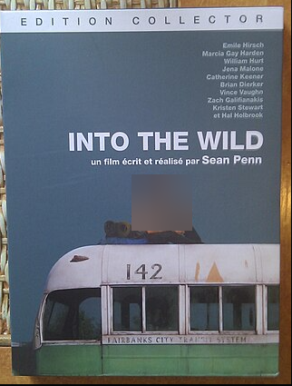
(Un film où l'acteur principal part dans la solitude (une solitude physique, du moins (physique, parce-que spirituellement, je crois il prit avec lui, au moins quelques lectures)
Un Auteur qui m'avait impressionné et qui avait dû me donner à l'époque la sensation que je n'étais pas seul à trouver tout de même le monde qui m'entourait comme globalement écarté de ma sensibilité, voire invivable. Mais déjà à l'époque, Friedrich Nietzsche dut me sembler quand même assez évasif. Je ne devais pas trop comprendre ce qu'il y aurait à faire avec lui: Qu'est-ce qu'était vraiment "le surHumain"? (un concept (non des moindres) qu'évoque F. Nietzsche, au moins, dans son oeuvre "ainsi parlait Zarathoustra"). Comment aller vers ce "surHumain"? Partir dans une solitude extrême? (Puisque F. Nietzsche évoque, partir dans la solitude, du moins dans "ainsi parlait Zarathoustra" : "
Mais qu'est-ce que signifiait ce "surHumain"? En fait, pour ce surHumain, j'estime il définit quelques grandes lignes déjà assez essentielles, mais des grandes lignes assez peu développées en elles-mêmes. Par exemple, une de ces grandes lignes, j'estime, ce serait la solitude.
Pendant au moins 5 ans, je n'ai quasiment pas parlé à mon entourage de ces lectures (que ce soit les Gens de mon âge ou d'un autre âge), je n'ai quasiment pas parlé de ces livres de Friedrich Nietzsche (entre autre le gai savoir, ainsi parlait Zarathoustra, par delà le bien et le mal, ou d'autres). Je me demande même si pendant un temps, j'avais même caché certains livres de F. Nietzsche que j'avais acheté, ou sinon caché, du moins je faisais en sorte que quand je le lisais, je le lisais "dans mon coin". J'imagine le premier livre de lui, je ne l'avais pas caché (peut-être était-ce ainsi parlait Zarathoustra, mais je ne suis plus tout à fait sûr) (je n'avais pas dû cacher ce premier livre, car je ne savais pas ce que contenait ce livre. Par contre, une autre fois, (de mémoire c'était en banlieue parisienne) j'avais fait un achat groupé de plusieurs livres de F. Nietzsche et il n'est pas improbable que cette fois-ci, j'avais essayé plus ou moins, de "cacher" ces livres, ou enfin du moins de ne pas les afficher. Je ne devais pas trop vouloir me "faire repérer", passer pour trop "spécial".)
À l'époque, j'imaginais bien que la Plupart des Gens m'entourant ne seraient pas vraiment réceptifs à parler de telle ou telle considération de Friedrich Nietzsche. Voire même seraient rejetants. Une question de feeling: Déjà, pendant quelques années, quelques années avant mes premières lectures de F. Nietzsche, à essayer de discuter de tel ou tel sujet avec autrui, j'avais déjà dû me faire une idée, une sensation, si la spiritualité, les considérations sur ceci ou cela étaient, ou non, "le truc" d'autrui. Je ne mettrais pas tout le monde au même niveau, j'imagine que certains auraient été davantage réceptifs que d'autres, mais j'avais déjà une idée d'ensemble, et pour la plupart des Gens m'entourant ou même de la société en général, leur mode de vie, leurs comportements me laissaient bien, pour le moins, suspecter, que F. Nietzsche ne serait pas, au moins pour la plupart, ne serait pas vraiment "leur truc". De plus, à cet âge-ci (entre 16 et 20 ans inclus), j'étais encore en train de découvrir certains textes de Friedrich Nietzsche, d'essayer de les comprendre, de les "ruminer", (d'ailleurs c'est un verbe qu'employa Friedrich Nietzsche) et comparé à l'âge que j'ai, vers 15/20 ans, j'estime j'avais une approche assez affective/émotive, de divers textes Nietzschéens. Certains des passages de F. Nietzsche devaient me sembler extrêmes et ce ne devait pas me sembler des plus adapté de parler de cet Auteur à autrui. Je devais suspecter qu'il serait incompris (ne fut-ce pas d'ailleurs ce qui se produisit, avec toute une partie du nazisme? Ce n'est pas non plus que j'estime qu'il n'y aurait pas eut d'évolution de la population, depuis le nazisme, et en plus j'étais en france) et/ou que j'allais passer pour extrémiste. Donc quel intérêt, quelle aisance, à parler, à cet-âge-ci (moins de 20/25ans), d'écrits de Friedrich Nietzsche à autrui : ne pas être écouté? passer pour extrémiste?(alors même que je n'étais pas forcément d'accord avec lui) Être rejeté? Ne pas vraiment avoir d'auditoire, de toute façon, car j'imagine bien qu'il y a avait assez peu de lecteurs de cet Auteur. De lecteurs ayant lu (et/ou écouté) au moins partiellement quelques uns de ses livres.

Friedrich Nietzsche, passé 20-25 ans🆕
Passé cet age-ci, je l'ai davantage laissé de côté.
Je développerai peut-être plus tard, sur ce qu'il me sembla se passer, quand parfois, j'avais parlé de lui, dans cette tranche d'âge, ou à proximité de cette tranche d'âge.
Friedrich Nietzsche, passé 30-35 ans🆕
Des années plus tard, des années après ces premières lectures de F. Nietzsche, j'avais lu – et surtout écouté en livre audio – divers textes du Christianisme (surtout du catholicisme). J'avais alors un certain recul pour juger si oui ou non la conception Nietzscheénne du Christianisme me semblerait juste. Et j'eus l'impression que Friedrich Nietzsche s'était fortement égaré, sur, du moins, une partie du Christianisme. Pour le moins le Christianisme/catholicisme de Luisa Piccarreta, Maria Valtorta.
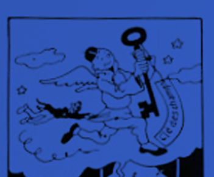
(image éditée avec un filtre bleu. Peut-être ceci "fatiguera moins les yeux?"(que si c'était un fond blanc))
Depuis au moins une dizaine d'années, je ne lis plus tellement Friedrich Nietzsche et depuis des années, pour le moins, je suspecte, que la Trinité, une Trinitisation (une "croisade" spirituelle collective) serait "la clef des champs", à une relative "impasse" Nietzschéenne. Je mis des guillemets au mot impasse, parce que tout de même, l' "impasse" Nietzschéénne serait à relativiser.
J'estime il y aurait à relativiser l'égarement de F.Nietzsche par rapport au Christianisme, en replaçant Friedrich Nietzsche à son époque : À l'époque de Friedrich Nietzsche, le livre du Ciel de Luisa Piccarreta ou l'oeuvre de Maria Valtorta ne seraient pas encore apparues, les moyens de transport, de communication n'étaient pas les mêmes que maintenant (XXIème siècle/informatique)... Probablement F. Nietzsche n'avait pas lu divers textes du Christianisme (genre Catherine de sienne, et puis assez évidemment, il n'aurait pas lu Maria Valtorta ou Luisa Piccarreta), je suspecte aussi Friedrich N. n'avait pas lu des biographies de tel(le)s ou tel(le)s Chrétiens).
Il me sembla assez probable que Friedrich Nietzsche eut un fond assez bon (pas forcément dans le sens où il employa parfois l'expression "les bons" (du genre "les bons sont toujours le début de la fin" 🙂)), mais qu'il évolua dans un milieu plus ou moins sous emprise de puissances démoniaques: le jansénisme de son temps. (Sa mère, sa sœur et même le tissu social dans lequel il baigna, furent-ils imprégnés d'un Christianisme dévoyé?) Friedrich Nietzsche aurait-il cru sortir de son impasse/souffrance psychique familiale et sociétale par la destruction de ce qu'il considéra être le Christianisme (démarche qui me sembla particulièrement prégnante dans le livre "
").
Mais le "Christianisme" de son temps, ou enfin ce que lui considéra comme le Christianisme, ne serait pas représentatif de ce que je considérerais être le Christianisme de Luisa Piccarreta, de Maria Valtorta. Le Christianisme revu sous "l'angle" de divers(es) Mystiques.
En fait, il me sembla probable que Friedrich Nietzsche ait essayé de détruire le Christianisme de son temps, par amour du véritable Christianisme (sans qu'il en ait forcément conscience). Ne serait-ce que parce que comportementalement, au moins en partie, il me sembla d'âme Chrétienne. (Ne serait-ce que de part son attrait pour la solitude, dans une société qui j'estime, devait déjà être, à son époque, plus ou moins sous emprise démoniaque.) 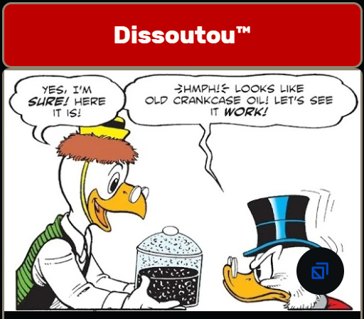
Nietzsche aurait-il été tout à fait contre le Christ? Pas si sûr, je dirais, ne serait-ce qu'à considérer ce passage du livre L' "AntéChrist":
"au fond il n’y a eu qu’un seul chrétien, et il est mort sur la croix."
L' "AntéChrist" : un livre attribué à Friedrich Nietzsche
Je ne serais pas étonné aussi que pour son style assez radical, sur la forme (la manière de rédiger), ce fut un style assez à la mode, à son époque, et ceci serait aussi à prendre en compte, pour relativiser cette manière parfois assez abrupte, que F. Nietzsche put sembler avoir, à certains du moins. (Lorsqu'il "parle" (ou plutôt écrit) des mots tels que "ratés" ou "faibles".)
- Humain, trop Humain. Un livre pour esprits libres (Menschliches, Allzumenschliches. Ein Buch für freie Geister, 1878)
- Opinions et sentences mêlées (Vermischte Meinungen und Sprüche)
- Le Voyageur et son ombre (Der Wanderer und sein Schatten)
- Aurore. Pensées sur les préjugés moraux (Morgenröte. Gedanken über die moralischen Vorurtheile, 1881)
- Le Gai Savoir « la gaya scienza » (Die fröhliche Wissenschaft « la gaya scienza », 1882)
- Ainsi parla Zarathoustra. Un livre pour tous et pour personne1 (Also sprach Zarathustra. Ein Buch für Alle und Keinen, 1885)
- Par-delà bien et mal. Prélude d'une philosophie de l'avenir (Jenseits von Gut und Böse. Vorspiel einer Philosophie der Zukunft, 1886)
- Généalogie de la morale. Un écrit polémique (Zur Genealogie der Moral. Eine Streitschrift, 1887)
- Le Crépuscule des idoles, ou comment philosopher à coup de marteau (Götzen-Dämmerung oder wie man mit dem Hammer philosophiert, 1888)
- L'AntéChrist. Imprécation contre le Christianisme (Der AntiChrist. Fluch auf das Christenthum, écrit en 1888, publié en 1895)
- Ecce homo. Comment on devient ce que l'on est (Ecce Homo. Wie man wird, was man ist, 1888)
- Le Cas Wagner (Der Fall Wagner. Ein Musikanten-Problem)
- Nietzsche contre Wagner (Nietzsche contra Wagner)
Certain(e)s me semblèrent assez négatifs, absolus, avec Friedrich Nietzsche
Ceux qui rejetèrent Friedrich Nietzsche complètement ou assez fortement, par exemple en réduisant son surHumain au nazisme me semblèrent ne pas y comprendre grand-chose à cet Auteur. Ou ceux/celles qui évoquèrent qu'il était f*u.
Bien souvent, je crains qu'avec elles/eux, je fus confronté à de la médiocrité, ou même pire : de la malfaisance, de la méchanceté. Et que par leurs jugements radicaux, peu pondérés, certain(e)s trahirent davantage leur médiocrité, voire méchanceté, à eux, plutôt qu'ils se montrèrent capables de pondération, de modération, capables de faire la part des choses, capables d'une analyse pondérée. (D'ailleurs, certain(e)s, avant de le juger, l'avaient-ils même lus (ou écouté en livre audio)?.. Ou se donnérent-ils simplement une espèce d'aura de savant, en sortant diverses considérations négatives sur lui..) Certains même associèrent la fin de son existence (dans laquelle Friedrich Nietzsche aurait été placé dans une clinique (après s'être effondré au cou d'un cheval)(si tant est que cet épisode du cheval ait bien eut lieu de la sorte)), avec une forme de "folie" qu'il aurait eut depuis toujours... Mais s'il eut une "folie" depuis toujours, comment à ce moment-là expliquer qu'il put avoir auparavant une telle production écrite, une telle quantité de questions qu'il posa / se posa... 😑
Envergure de Friedrich Nietzsche?🆕
Sous certains aspects, il ne me semblerait pas improbable tout de même que Friedrich Nietzsche fut un des plus grands Auteurs de son temps (enfin pour les Auteurs publiquement connus). Aurait-il même fait partie de ces quelques âmes choisies par le Fils? (pendant quelques années) (Puisque le Fils aurait évoqué, à
, qu'à chaque époque, il y avait des âmes choisies :
20 octobre 1931, le livre du Ciel : Tout au long des siècles, il y a toujours eu une âme que Dieu a formée comme centre de toute la Création. C’est en elle — que notre Amour s’appuyait et — que notre Vie battait et atteignait le dessein de toute la Création. C’est au moyen de tous ces centres -que la Création est maintenue et — que le monde existe encore. Sinon il n’aurait plus de raison d’exister. Car il lui manquerait la vie et la cause de toute chose. Il n’y a donc pas eu et il n’y aura jamais de siècle où nous ne choisirons pas des âmes chères, plus ou moins importantes, - qui formeront le centre de la Création et -en qui nous aurons notre Vie qui palpite et notre Amour à l’œuvre.)
Il me semblerait aussi assez probable, qu'il influença, au moins modérément, la manière de parler et la manière d'écrire de son temps, en allemagne, du moins.
Friedrich Nietzsche : Un manque du Père.. Nietzsche et théologie
Friedrich Nietzsche me sembla confondre une partie du Christianisme de son temps avec le Christianisme tout court
| Le relatif plantage Nietzschéen sur le Christianisme. Une conception du Christianisme fortement erronée. | ||
| Erreur Le Christianisme tel que compris par Nietzsche = en fait une partie du protestantisme de son temps |
Christianisme réel | |
| Le protestantisme/jansénisme. | Le catholicisme | |
| Certains pasteurs pénibles, malhonnêtes. Feraient passer leur pensée personnelle pour celle de Dieu. | Prêtre vertueux. Grand(e)s saint(e)s de l'Église. (Docteur(e)s de l'Église). "Alitées de l'Église" (par exemple Luisa Piccarreta, Maria Valtorta) |
|
| Pour partie, une religion du ressentiment? | Une religion de charité | |
| Une religion d'amour (le mot amour étant pris dans un sens élevé, élévation de l'âme) | ||
| Intelligence, précision. Marie, Luisa Piccarreta, etc. |
||
Friedrich Nietzsche - Un double jeu?
Quelqu'un qui se serait révolté contre le Christianisme de son temps (jansénisme) (livre l'antéChrist). Révolté par amour du véritable Christianisme? Le véritable Dieu de Friedrich Nietzsche, aurait-il été en réalité le vrai Dieu? C'est-à-dire le Fils? En réalité, est-ce que F. Nietzsche aurait eut un double jeu, au cours de son existence? C'est-à-dire, il aurait rejeté le Christianisme tout en gardant un respect pour le Fils? Et même son attaque contre le protestantisme de son temps, ne pourrait-elle être perçue comme une sorte de frustration de la part de Nietzsche de ne pas avoir à faire avec ce protestantisme à un véritable Christianisme? Son véritable Dieu aurait-il fini par le "châtier"?
|
"Retournement" de cette citation ci-contre : Lors de l'épisode où il s'effondra au cou d'un cheval (si tant est que ceci ait bien eut lieu). Aurait-ce été le Fils qui fit "périr" Nietzsche? (Peut-être même par pitié pour lui et pour l'amener au Ciel? C'est une hypothèse que je n'écarte pas). La "colère" de son Dieu finit-elle par le faire périr? |
| L'idéal profond de F. Nietzsche : le véritable Christianisme? | ||
|
|
Dans quel sens aurait-il écrit "Dieu est mort"? Parce qu'il s'en réjouissait, ou parce qu'il s'en plaignit. |
|
Haine si farouche contre les faux religieux, que Friedrich Nietzsche en serait arrivé même jusqu'à écrire:
"Je ne suis nullement, par exemple, un croquemitaine, un monstre moral, - je suis même, de par nature, à l'antipode du genre d'hommes qu'on a vénérés jusqu'ici comme vertueux. Il me semble, entre nous, que c'est justement ce qui me fait honneur. Je suis un disciple du philosophe Dionysos ; j'aimerais mieux, à la rigueur, être un satyre qu'être un saint."
Le crépuscule des idoles, Friedrich Nietzsche
F. Nietzsche - Sa mère et sa sœur, récipients de puissances maléfiques?
Est-ce que l'égarement de F. Nietzsche quant à la conception du Christianisme, serait, en partie du moins, à rapporter à l'intensité de la souffrance qu'il put ressentir face à sa mère et à sa sœur? Sa mère et sa sœur auraient elles été comme symboliquement les porteuses de toute une partie du jansénisme de son temps?
À se demander si quand une grande âme fut sur terre, du moins au cours des deux derniers millénaires, cette grande âme concentra autour d'elle tout un tas de puissances maléfiques. À se demander si cette concentration de puissances maléfique fut un phénomène automatique. J'eus de quoi estimer, ne serait-ce qu'à travers divers textes du Christianisme, que cette concentration eut aussi lieu pour le Christ, mais aussi pour beaucoup de grandes âmes du Christianisme (par exemple Gemma Galgani ou Maria Valtorta). Ce qui donnerait une plausibilité à ce qu'il ait bien existé des "puissances démoniaques", ou enfin du moins, "quelque chose".
Dans le cas de Friedrich Nietzsche, je ne souhaite pas exprimer par là que la mère et/ou la sœur de Nietzsche auraient été elles-mêmes directement des "démons", mais plutôt j'ai suspecté qu'elles portèrent en elles (et/ou furent environnées) de puissances démoniaques (ce qui serait différent que d'être directement un(e) démon(e)). Des "puissances démoniaques" qui environnèrent Friedrich Nietzsche? Il y aurait quand même une logique, à ce que du moins parfois, ceci se soit passé ainsi car il serait d'une grande importance pour le "diable" de ne pas laisser s'échapper de grandes âmes. (Donc il s'attacherait à rôder particulièrement autour d'elles).
Des "puissances démoniaques" qui environnèrent Friedrich Nietzsche? Il y aurait quand même une logique, à ce que du moins parfois, ceci se soit passé ainsi car il serait d'une grande importance pour le "diable" de ne pas laisser s'échapper de grandes âmes. (Donc il s'attacherait à rôder particulièrement autour d'elles).
Il y aurait une sorte de double effet : d'un côté un effet plutôt positif, transcendant : ces grandes âmes remporteraient des victoires sur les forces du mal, mais d'un autre, elles les concentreraient aussi autour d'elles.
Dans le cas de Friedrich Nietzsche, je ne souhaite pas exprimer par là que la mère et/ou la sœur de Nietzsche auraient été elles-mêmes directement des "démons", mais plutôt j'ai suspecté qu'elles portèrent en elles (et/ou furent environnées) de puissances démoniaques (ce qui serait différent que d'être directement un(e) démon(e)).
Il y aurait une sorte de double effet : d'un côté un effet plutôt positif, transcendant : ces grandes âmes remporteraient des victoires sur les forces du mal, mais d'un autre, elles les concentreraient aussi autour d'elles.

F. Nietzsche - Quelques extraits de son livre ''l'antéChrist''
Comme s'il avait eu des œillères et n'avait vu que la partie pervertie du "Christianisme" (ou enfin du moins ce qu'il considéra comme le Christianisme):
|
Partie V du livre "L'antéChrist" (de Friedrich Nietzsche): |
Qu'est-ce que ce fut que cette conception du Christianisme?🤔 |
|
Probablement se sentit-il obnubilé/aliéné par sa mère et sa sœur et que par désespoir, il souhaita évacuer ceci par une attaque contre le Christianisme?
|
"le Christianisme [...] a mené une guerre à mort contre ce type supérieur de l’homme" : "Le Christianisme a pris parti pour tout ce qui est faible, bas, manqué" :
Là encore, comme si F. Nietzsche s'était trompé de Christianisme. |
Un autre extrait de l'antéChrist (livre attribué à Friedrich Nietzsche):
|
Limite incompréhensible, ce passage surligné en rouge. Passage qui me semblerait faux. Divers miracles ont été attestés. Il y eut des témoins. (Par exemple guérisons miraculeuses de lourdes.) |
F. Nietzsche - Il se serait vraiment planté sur le libre arbitre
(Je dirais, dans ce passage de Nietzsche, il ressort une problématique profonde de Nietzsche : croire que les Gens de religion = le mal.) |
|
À se demander comment il put se planter à ce point.
Probablement fit-il une association Christianisme = Christianisme de ma mère et de ma sœur = mauvais.
Friedrich Nietzsche, un manque de Christianisme. Le libre arbitre - Problématique par rapport à la divine volonté / le livre du Ciel
"Et ainsi Zarathoustra se mit à parler au peuple: |
"Car tout ce qui n’est pas ma Volonté dans la Créature est dur, lourd et oppressant. Ma Volonté vide la Créature de tout ce qui est Humain et rend tout léger par son souffle."2 mai 1930 Le livre du Ciel |
Friedrich Nietzsche. Les actes. Comparaison avec le livre du Ciel (Le Fils/Piccarreta)
Dans le livre "Par-delà le bien et le mal", Friedrich Nietzsche évoque que les actes ne comptent pas. Alors qu'au niveau du livre du Ciel, il est rédigé que si.
|
Les actes. Friedrich Nietzsche | le livre du Ciel (L.Piccarreta) et Maria Valtorta |
||||
| Friedrich Nietzsche Dieu est enlevé de l' "équation" |
Le livre du Ciel (L. Piccarreta) / Maria Valtorta | |||
Les actes toujours ambigus, insondables, Friedrich Nietzsche? |
Attention, ce n'est pas parce que je mis cet extrait que pour autant, j'inciterais par là des Créatures qui auraient promis de commettre tel ou tel acte violent, ou tel ou tel acte qui irait à l'encontre de Dieu (par exemple à l'encontre des dix commandements), ce n'est pas pour autant que je les inciterais à tenir ce type de promesse. |
|||
Nietzsche et nazisme
Il se serait opposé au nazisme. Je ne serais pas étonné qu'Adolf Hitler se soit inspiré de lui sur certaines de ses idées. (Concernant, du moins, l'apôtre Paul.)
Radicalité Nietzschéenne, impasse Nietzschéenne
Nietzsche et volonté de puissance
|
Cette considération (ci-contre, à gauche) : une impasse qui manque de Christianisme? Peut-être assez vrai chez les animaux. (Et encore, même pas, je reviendrais peut-être plus tard, sur les animaux, comme quoi la vie ne serait pas chez eux essentiellement agression). D'après le livre du Ciel, ce serait même l'inverse que ce considéra F. Nietzsche dans ce chapitre (je mettrais peut-être plus tard les références). |
|
|
Une conception sans Dieu |
|
|
Par-delà le bien et le mal/Chapitre IX. Qu’est-ce qui est noble ? -
|
Il me sembla y avoir vraiment une impasse dans ce type de conception Nietzschéenne, une excessivité. |
Mais pourquoi employer toujours des mots auxquels fut attaché, de tout temps, un sens calomnieux ? Ce corps social, dans le sein duquel, comme il a été indiqué plus haut, les unités se traitent en égales — c’est le cas dans toute aristocratie saine —, ce corps, s’il est lui-même un corps vivant et non pas un organisme qui se désagrège, doit agir lui-même, à l’égard des autres corps, exactement comme n’agiraient pas, les unes à l’égard des autres, ses propres unités. Il devra être la volonté de puissance incarnée, il voudra grandir, s’étendre, attirer à lui, arriver à la prépondérance, — non par un motif moral ou immoral, mais parce qu’il vit et que la vie est précisément volonté de puissance. — Admettons que, comme théorie, ceci soit une nouveauté, en réalité c’est le fait primitif qui sert de base à toute histoire. Qu’on soit donc assez loyal envers soi-même pour se l’avouer ! —
Radicalité Nietzschéenne à propos de la solitude
|
Dans ce passage, "Zarathoustra" (le Zarathoustra de Friedrich Nietzsche) s'adresse à ses disciples. |
Considérations sur ce passage | ||||||||||||||||
|
Je dirais dans ces passages surlignés en rouge , il pourrait y avoir du vrai et du faux.
(À se se demander si ce manque d'espoir lui vint de son rejet de la religion du Fils) |
||||||||||||||||
Considérations Nietzschéennes sur les comédiens - livre ''Ainsi parlait Zarathoustra''
Pour moi tous les comédiens ne se valent pas. Et ce n'est pas parce que certaines considérations Nietzschéennes auraient pu avoir une validité il y a près d'un siècle et demi, qu'elles auraient encore tout à fait une validité maintenant.
Voici mon analyse d'un extrait d'ainsi parlait Zarathoustra
|
Analyse de quelques considérations Nietzschéennes |
||
|
Citation de Fredrich Nietzsche |
Ma considération de cet extrait de Friedrich Nietzsche |
|
|
Savoir si ce passage est vrai pourrait en revenir à se demander si depuis des siècles le monde est sous possession "démoniaque". Or il y aurait de quoi estimer que ce fut, au moins partiellement, le cas. Si je considère que dans les siècles passés la plupart des hommes et femmes d'Église vécurent à l'écart de la société (à l'écart des affaires du monde), alors ceci donnerait du crédit que la société fut globalement invivable (car pourquoi se serait-il mis sinon à ce point à l'écart?). Par contre, si le 3ᵉ fiat a commencé vers le milieu du XXème siècle, alors cette considération Nietzschéenne me semblerait trop absolue, trop extrême, radicale. |
|
|
Phrase beaucoup trop absolue là aussi. | |
|
||
|
"c'est-à-dire ce qui crée" : Comme assez souvent dans le livre ainsi parlait Zarathoustra, une phrase qui peut sembler assez vague. Par contre, si je la rapporte au Christianisme, dans le sens où ce qui est grand fut ce qui était proche de Dieu. En général, je dirais qu'au cours des siècles passés, ceci fut assez faux. En général, les peuples eurent toute une dévotion, toute une foi en l'Église. Par contre, depuis quelques décennies où il y eut une désaffection de l'Église, en général, les peuples laissèrent de côté les théologiens. Il n'y a qu'à considérer aussi comment furent quasiment inconnus les plus grands théologiens depuis quelques décennies, comparativement à des "stars" du football ou tel ou tel comédien. |
|
|
Ceci, au cours des dernières décennies du moins, dût me sembler assez vrai. Il dut exister dans la société de relatifs inconnus du peuple, alors qu'ils étaient les véritables stars, tandis que beaucoup de comédiens, d'acteurs de cinéma étaient très connus. Ceci aurait par exemple été le cas entre Dieudonné et Ahmed Moualek. Je ne serais pas étonné qu'Ahmed Moualek (selon ses dires aussi), ait beaucoup inspiré Dieudonné. Mais la "star", celui qui fut surtout connu, la "célébrité", ce fut Dieudonné. |
|
|
Une phrase centrale de ce chapitre d'Ainsi parlait Zarathoustra. | |
|
Passage assez vrai, en ce qu'il me sembla que beaucoup de comédiens, n'eurent parfois pas un style de vie différent de celui qu'ils critiquaient dans leurs sketchs. Genre certains firent des ketchs critiquant diverses richesses matérielles, mais ces mêmes comédiens furent eux-mêmes dans une opulence matérielle. | |
|
||
Friedrich Nietzsche - Malgré tout son rejet apparent de Dieu, j'estime Quelqu'un qui en fut, en partie du moins, relativement proche
Quelqu'un qui me sembla avoir tout de même les idées claires sur de nombreux points
Comparé à divers Gens dont leur Auteur préféré serait Marx, et qui auraient tendance à concevoir que toute la faute (ou une grande partie du moins) serait extérieure à l'homme, Friedrich Nietzsche me sembla avoir compris que les hommes (les "masses" selon une expression qu'il me sembla avoir souvent retrouvé chez lui) ces "masses" (ou je dirais plutôt une partie) n'étaient pas si gentilles, mignonnes, innocentes que ceci, mais qu'elles semblaient aussi se complaire dans leur gadoue.
Friedrich Nietzsche - Un mode de vie qui lui donna de la crédibilité
Je dirais crédible sur certaines de ses idées. Pas pour certains textes qu'il rédigea sur le Christianisme.
Beaucoup trouvèrent qu'il y eut des problèmes dans la société, mais la plupart s'inscrivirent tout de même dedans (par exemple, ils mirent quand même leurs enfants à l'école). Friedrich Nietzsche, lui,
- il vécut à l'écart de la société (une grande partie de son âge adulte). Avec une vie semblable à de véritables religieux, retirés des affaires du monde (pour lui, solitude en suisse, entre autres pays)
- il semblait avoir compris que de base, à la racine, il y avait comme un problème, avec la société, "les affaires du monde"
Friedrich Nietzsche - Une expérience mystique (en particulier pour ''Ainsi parlait Zarathoustra'')
Une différence de Friedrich Nietzsche par rapport à d'autres philosophes, et par contre à la ressemblance de divers mystiques religieux, c'est que je suspecte que Friedrich Nietzsche aurait eut comme une expérience mystique assez poussée, en particulier avec la rédaction "d'ainsi parlait Zarathoustra". (Il évoqua que cette oeuvre lui était comme tombée du ciel et qu'il le rédigea en relativement peu de temps). Son livre, je dirais, le plus religieux, du moins sur la forme.
"Dans mon œuvre, mon Zarathoustra tient une place à part."
''Ré-aiguillage'' 🐝🛤️🚂
Ré-aiguillage : ''Mathieu B'' alias ''le grand Monarque'' 🚂
Quelqu'un que j'avais mis pendant un temps sur cette page. Mais certains propos de vidéos odysee où il apparut (du temps où Mathieu B faisait des vidéos, il y a quelques années, à compter de 2024) me semblèrent plutôt se rapprocher de l' "extrême droite". Je dirais que j'ai trouvé d'un côté, une certaine amabilité de sa part de prendre en considération diverses situations de ce monde, mais d'un autre côté, au niveau, parfois, de la méthode qu'il évoqua pour s'occuper de ces situations, ces méthodes ne me semblèrent pas se rapprocher de ce qu'aurait préconisé le Fils. Alors certains de ses propos auraient-ils été à prendre au premier degré? au second degré? Que serait-il devenu, depuis sa "disparition", il y a quelques années? Je n'en sais rien (jusqu'au 1ᵉʳ mai 2024 inclus). Est-ce, du moins en partie, lui, qui animerait actuellement le site internet "the savoisien"?
Ré-aiguillage : Pierre-Marie (de l' ''oddr'') 🚂
 De ce que je compris, il serait le gestionnaire du site oddr. Pendant quelques mois, je l'avais gardé sur cette page, mais sur certains points, vraiment des conceptions trop "occidentales", "avec des œillères". Même si sur certains points, je dirais, il me sembla avoir compris "des choses" que peut-être relativement de Gens ont compris.
De ce que je compris, il serait le gestionnaire du site oddr. Pendant quelques mois, je l'avais gardé sur cette page, mais sur certains points, vraiment des conceptions trop "occidentales", "avec des œillères". Même si sur certains points, je dirais, il me sembla avoir compris "des choses" que peut-être relativement de Gens ont compris.
Pour le déplacement, "l'aiguillage", j'ai hésité entre "l'envoyer" dans la page occident-orient et la page gauche-droite. Pour le moment, je décide de le mettre sur la page gauche-droite.
Ré-aiguillage : La vidéaste, youtubeuse, antastesia
Antastesia - YouTube https://www.youtube.com/@Antastesia
- YouTube https://www.youtube.com/@Antastesia
En ce jeudi 5 septembre 2024, je déplace antastesia (la vidéaste), vers la
.
Michel Onfray
Un objectif, par rapport à Michel Onfray, serait de ne pas être dans la méchanceté, par rapport à lui, car ceci ferait peut-être "son jeu", s'il se trouve qu'il est sous emprise démoniaque. À re considérer cette partie sur lui, je ne vois pas trop en quoi non plus j'aurais rédigé des "choses" particulièrement méchantes, sur lui. (paragraphe édité le lundi 30 décembre 2024)
Préambule - M. Onfray 🤔
Je dirais assez difficile à "cerner", comme cas. Tantôt, il me sembla plutôt à gauche (professeur en enseignement "supérieur/faculté", manière de penser), tantôt plutôt à droite (conférences avec des Judaïsants). Mais relativement peu importe peut-être, en fait, qu'il fut à droite ou à gauche. L'important serait plutôt de savoir s'il fut "possédé" ou non : s'il fut plutôt du côté de Dieu ou plutôt du côté du diable.
dirais assez difficile à "cerner", comme cas. Tantôt, il me sembla plutôt à gauche (professeur en enseignement "supérieur/faculté", manière de penser), tantôt plutôt à droite (conférences avec des Judaïsants). Mais relativement peu importe peut-être, en fait, qu'il fut à droite ou à gauche. L'important serait plutôt de savoir s'il fut "possédé" ou non : s'il fut plutôt du côté de Dieu ou plutôt du côté du diable.
Pour l'instant, Michel Onfray dut me sembler encore en latence. C'est si jamais devaient survenir des événements eschatologiques (par exemple l'avertissement à garabandal, ou autre événement) que peut-être, je verrai plus distinctement qui est qui.
Pour l'instant, Michel Onfray dut me sembler encore en latence. C'est si jamais devaient survenir des événements eschatologiques (par exemple l'avertissement à garabandal, ou autre événement) que peut-être, je verrai plus distinctement qui est qui.
(J'avais lu partiellement un des livres de Michel Onfray, il y a plusieurs années. Sinon, je ne l'ai pas tellement lu.)

Aurais-je vraiment ressenti un intérêt à m'intéresser à la qualité de la pensée de Michel Onfray? Oui et non. Si je considère qu'il exist(a)e un Dieu et que ce serait lui qui donnerait des lumières aux uns et aux autres, alors il y aurait de quoi avoir un certain dédain, détachement, inquiétude, pour ce(lles)ux ayant mis de côté Dieu. Leur comportement face à Dieu serait comme un reflet du degré d'attention que j'aurais à leur porter. Avec elles/eux, il y aurait le risque d'être dans les ténèbres, le faux, ou sinon strictement le faux, un mélange de vrai et de faux. Alors pourquoi m'être "intéressé" tout de même à Michel Onfray? Eh bien, parce que j'ai suspecté qu'il fut/soit un des meilleurs représentants d'une manière actuelle de penser (fin XXème, début XXIème siècle). Michel Onfray, peut-être bien un archétype de la manière de penser de toute une partie de la population Occidentale actuelle, (peut-être plus de 60% de la population de + de 18ans) qui eut accès au savoir : des Créatures qui ne cherchèrent pas vraiment la vérité? mais plutôt un confort de la pensée. Comprendre son cas serait comprendre, en partie du moins, une époque. (Si tant est que son cas soit compréhensible car s'il est ténébreux.. Quoi comprendre aux ténèbres? quoi voir dans le brouillard?) Donc autrement qu'une question d'intérêt porté à la qualité de ses œuvres, ce serait plutôt une question d'anthropologie, de charité, de "salut" que de m'occuper de Michel Onfray et de toute une partie de la population qu'il représenterait.
De plus, dans un site internet comme celui-ci, basé sur la théologie, à considérer que Michel Onfray se prononça assez fermement sur la non existence historique du Christ, ceci donnerait peut-être une raison supplémentaire de se pencher sur son cas.
L'hypothèse, comme bien souvent, dans ce site, c'est qu'il y aurait bien un Dieu. De là, l'on ne pourrait pas mettre Dieu de côté, comme le fit, entre autres, Michel Onfray, sans qu'il y ait un problème tôt ou tard. Par ailleurs, je n'écarte pas que Michel Onfray, à l'image aussi de toute une partie de la population, ait quand même un potentiel d'évolution. Et qu'il puisse aussi évoluer davantage vers la Trinité.
De plus, il y aurait éventuellement eu une injustice avec Michel Onfray, car il fut souvent présenté comme un grand Penseur et un des rares à disposer d'une telle audience médiatique, depuis bien des années.
| Michel Onfray : un décalage entre qualité de la pensée et, depuis des années, une place médiatique qui lui fut allouée ? | ||||||||||||
| Comment Michel Onfray me sembla, en général, avoir été présenté, depuis des années | Ce qui serait plutôt la réalité? | |||||||||||
| Un roi, un lion. |
Un mélange (pour la partie occidentale) | et autruche (pour la partie théologie)? | ||||||||||
Fréquemment en devanture de boutiques, une de journaux, une de magazines, divers plateaux de télévision, émissions de radio. |
||||||||||||
|
(Pierre Cormary) Mais le Fils aussi, par exemple dans le livre du Ciel, aurait évoqué qu'il faisait exprès d'essayer d'être simple.
|
||||||||||||
Psychanalyse du ''cas'' Onfray : Une émission de radio
Une émission de radio qui me sembla assez intéressante pour considérer Michel Onfray : "Michel Onfray : une imposture ? Une émission se penche dessus sans concession". Émission intéressante au niveau de la qualité de diverses des considérations psychanalytiques émises dans cette émission de radio.
Cette émission de radio a été publiée il y a quelques années, je ne prétends pas que Michel Onfray n'aurait pas évolué, depuis.
Pierre Cormary, blogueur
(vidéo d'origine https://www.youtube.com/watch?v=9nSvZb_xw_Q )
Michel Onfray et manière de penser
| Michel Onfray | |||
| "ange" | ou | "démon"? | |
| ou mi-"ange", mi-"démon" ? : je le verrai plutôt ici, entre les deux. update du lundi 3 mars 2025 : quoique s'il y aurait bien un Dieu, et que ce soit le Fils, alors pour le moins, je doute que l'on puisse être entre les deux, car (d'après au moins un texte de théologie) soit l'on serait contre lui soit avec lui. Et à ce moment là, j'aurais de quoi suspecter que Michel Onfray pencha plutôt du côté du "démon". |
|||
|
Manière de penser assez totalitaire retrouvée chez Michel Onfray? Fut-ce de l'orgueil? |
|||
|
Cette simplification, indistinction qu'aurait fait Michel Onfray, dans certains passages de ses livres serait-elle à mettre en lien avec cette indistinction qu'il eut aussi pour Dieu? Autrement rédigé, une indistinction qu'il aurait eut pour Dieu, cette indistinction se aurait-elle ensuite "contaminée" son esprit, et l'aurait-elle aussi amener à indistinguer le monde qui l'entourait? Une dé-hiérarchisation des choses. |
|||
|
Un adjectif parfois employé dans cette émission fut l'adjectif "dangereux" et ce me sembla un adjectif intéressant, important à considérer.
Cet aspect mortifère serait aussi à mettre en lien avec un rejet de Dieu. Sans Dieu, ce serait automatiquement les ténèbres. |
|||
|
|
|||
edit du mardi 18 février 2025 : À y re réfléchir, ceci dépend ce que entendit Rémi Lélian par le verbe rigoler. S'il s'agit quand même d'avoir un rire assez prononcé, audible, alors oui, de mémoire ce me sembla assez rare de voir/entendre Michel Onfray être très expressif, au niveau du rire.
Michel Onfray, l'apôtre Paul et Friedrich Nietzsche
Ce qui me sembla assez probable, c'est que Michel Onfray s'inspira du livre l'antéChrist, de Friedrich Nietzsche, pour sa conception de
. Ce livre de Friedrich Nietzsche ne fut pas évoqué dans cette émission de radio ni je crois dans le livre de Jean-Marie Salamito "Michel Onfray au pays des mythes", pourtant il y a vraiment une ressemblance entre la conception de Michel Onfray pour Paul et la conception qu'aurait eut Friedrich Nietzsche pour l'apôtre Paul, à la fin du XIXème siècle. (Conception qui influença aussi probablement Adolf Hitler et autres dirigeants allemands, quelques décennies plus tard..)
Pierre Cormary dans cette émission de radio sur Michel Onfray
Dans cette émission de radio, Pierre Cormary me sembla parfois particulièrement amusant/incisif (sans qu'il m'ait semblé particulièrement méchant non plus envers Michel Onfray). Une intonation de voix italienne, j'ai trouvé. Une qualité dans le choix des mots qu'il prononça. Pourquoi une qualité? Parce qu'il employa des adjectifs tournants autour du "diable", de la "possession démoniaque". Or, il n'y aurait pas de meilleur référentiel pour juger de la qualité d'âme de Quelqu'un(e) que de savoir sa proximité avec Dieu ou le diable.
Par exemple, à un moment, il évoqua que Michel Onfray est très malin et de savoir si Michel Onfray Onfray serait plutôt dans la malice ou plutôt dans l'intelligence, ce serait peut-être bien là la problématique pour juger d'où en serait l'âme de Michel Onfray et sur quelle pente serait son âme : une âme plutôt en santé ou une âme plutôt possédée, et une âme plutôt sur une pente ascendante, ou plutôt une pente descendante.
Enfin, qualifier Michel Onfray de "très malin" me semblerait exagéré, pour Michel Onfray, car j'ai quand même l'hypothèse qu'il soit sous possession partielle et qu'il ne fit pas forcément exprès d'avoir dit ou écrit ce qu'il a parfois dit ou écrit. (Autrement rédigé, je suspecte qu'il y ait chez lui une part d'innocence).Cette expression de très malin serait-elle plutôt à réserver à des Gens comme l'antiChrist et à des suiveurs de l'antéChrist? Mais aussi une fois que sera éventuellement venu l'avertissement. C'est-à-dire à des Gens qui agiront en conscience.
D'un autre côté, je peux concevoir qu'il y ai de quoi y avoir une indulgence pour Pierre Cormary, même s'il fut dans l'exagération, pour cette expression, concernant, Michel Onfray, ne serait-ce que pour deux causes : par qu'il aurait été prit par l'émotion, sur le moment, et parce que ceci ferait longtemps que Michel Onfray serait dans des déviances.
🧙
Par contre, à au moins à un moment, je ne serais pas d'accord avec Pierre Cormary, par exemple quand Pierre Cormary dit qu'un slogan pour la musique classique était "infâme".
de 14:00 à 14:16 : « c'est un peu comme la fameuse pub infâme d’il y a quelques années je n'aime pas la musique classique mais ça j’aime. Combien de fois ai-je entendu ou lu sous la plume ou le clavier de Gens qui détestaient Onfray qui le vomissaient à juste titre juste titre, tout en disant ah non mais là quand même il a raison »
J’ai le souvenir d'avoir entendu (ou lu) aussi cette publicité/slogan, il y a plusieurs années, au moins pour un produit. Mais ce dut me sembler exagéré qu’il trouve ce slogan « infâme ». Le mot « infâme » me semblant assez fort tout de même, alors que ce slogan me semblait assez vrai pour la musique classique pour mon cas du moins: quand je connaissais assez peu la musique classique (à l'adolescence), beaucoup de morceaux me semblaient assez compliqués, pénibles à écouter (par rapport au rock ou en général aux musiques de variétés qui passaient dans les radios généralistes, par exemple) par contre, quelques morceaux classiques me semblaient plutôt attirants.
(Pierre Cormary, Auteur sur L'incorrect
Pierre Cormary
)
Les autres invités de cette émission de radio
Pour Jean-Marie Salamito, j'ai partiellement lu le livre Onfray au pays des mythes (au moins 30% du livre).
Michel Onfray tout de même savant
Sinon, je ne chercherais pas à être particulièrement méchant envers M. Onfray, je n'ai pas lu la plupart de ses livres et de ce que j'ai pu entendre/lire sur lui, j'estime qu'il eut quand même un certain savoir.
En plus, je me demande s'il se fit quand même plus ou moins exploiter par tout un "monde" de l'édition, un monde qui le courtiserait surtout pour l'argent plutôt que par estime de sa rigueur intellectuelle, et s'il en serait plus ou moins victime, alors ne serait-ce que pour ceci, ce ne serait peut-être pas des plus nobles de ma part de "m'en prendre" sans réserve à lui.
De plus, de ce que j'ai compris, son Auteur fétiche est Friedrich Nietzsche et j'ai aussi accordé de l'importance à Friedrich Nietzsche.
De plus, j'estimerais pour le moment que Michel Onfray est plutôt de gauche et comme d'autres "gens de gauche", je suspecte qu'il ait toute une intelligence émotionnelle, intelligence du cœur qu'eurent parfois (et je dirais même en général) moins certains Gens plutôt dits de droite.
Michel Onfray - La vaccination
Michel Onfray s'était prononcé tout de suite pour la vaccination. Mais ce positionnement serait-il digne d'un esprit sceptique...
Enfin il est revenu là-dessus: Le droit d'être sceptique - La semaine vue par Michel Onfray - Michel Onfray
Michel Onfray - La théologie
Kierkegard, avait déjà évoqué 3 niveaux d'évolution.... Le stade esthétique, Le stade éthique, Le stade religieux
(lien (
))
La notion de ''Boomer''🥳 / génération x, génération y, millenials
Les ''Boomers'' 🥳🎈
|
|
| Une musique, je dirais, qui ne date pas vraiment de l'époque des "Boomers", mais plutôt de leurs parents, mais bon, comme j'y entendis le mot "boum".. |
Les "Boomers". Expression qui dut me sembler assez amusante/"marrante". Assez représentative.
Je dirais une génération de l'après-guerre et jusqu'aux années 60/70. Genre, approximativement, : 1940 --> 1965/1970
Rock'n roll. Avions de lignes commerciaux. Voyages à l'étranger. Grande distribution / supermarchés. Arrivée du plastique à grande échelle. Pétrole. Télévision. Pilule contraceptive.
Quelques remarques sur cette notion de Boomers🥳
(Je ne connais pas spécialement ce compte tweeter/x, je le mis juste parce-que ce post me sembla pas mal)
Post je dirais, peut-être vrai pour pas mal de Gens de cette génération, mais peut-être pas pour tous, quand même
Les "Boomers". Déjà, je ne mettrais pas tous les Gens de cette génération 1940 --> 1965/1970 dans le même panier 👜. Et je comprendrais qu'il ne soit pas des plus respectueux que certains soient appelés simplement des "Boomers". Car tout le monde ne se vaudrait pas. Je dirais que quand même pas mal de Gens de cette génération furent travailleurs. Pas seulement/simplement orientés vers les restaurants, les bars, les sorties.
Mais enfin globalement, leur génération, comme aucune autre génération que la leur, depuis des siècle, ne me sembla avoir pu autant être portée sur divers plaisirs, loisirs, précédemment non accessibles à grande échelle : (avions commerciaux, pilule contraceptive).
Peut-être quand même à même de faire de la peine, par ailleurs, parfois, cette expression, parce qu'elle aurait tendance à mettre tout le monde dans le même panier. Elle aurait tendance à faire croire que cette génération ne furent que des "fêtards". Mais enfin globalement, ce me sembla assez vrai, pour pas mal de Gens de cette génération, cette notion de "Boomers". Comme la sensation que pas mal de Gens de cette génération étaient quand même resté comme bloqués à un "âge mental" d'adolescent(e), comportementalement. Ceci est peut-être lié aussi à une génération qui fut la première à disposer à si grande échelle de loisirs, contraception, restaurants, voyages.
La génération x
Notion assez représentative aussi, j'estime. Génération des tout débuts de l'informatique. Génération "canal +", films éro... etc.
La génération y, les milléniaux
wikipedia au dimanche 1er septembre 2024 : "La génération Y, aussi appelée les milléniaux, regroupe les personnes nées entre le début des années 1980 et le milieu des années 1990. Elle succède à la génération X et précède la génération Z. Elle est marquée par l'avènement d'Internet, des réseaux sociaux, et la transition vers un monde numérique. Les milléniaux sont considérés comme les premiers enfants du numérique."
Pas bien compris pourquoi ce seraient eux qui seraient appelés les milléniaux, plutôt que la génération z. Pendant un temps, je dus même plutôt croire que les milléniaux, c'était la génération z. Genre ceci devait me sembler plus adapté : milléniaux = ceux/celles qui commencent avec le nouveau millénaire.
Pour moi, cette génération y serait plutôt à mettre en lien avec la génération plutôt Garçon, qui vint après une génération x, plutôt orientée Fille.
La génération z
wikipedia au dimanche 1er septembre 2024 : "La génération Z, souvent appelée les zoomers, regroupe les personnes nées entre la fin des années 1990 et le début des années 2010, généralement entre 1997 et 2012. Elle succède à la génération Y et précède la génération Alpha. Elle est définie comme une génération née alors que les communications numériques étaient déjà bien installées dans la société."
Nvv / ''Hildegarde''
Préambule - ''nvv'' et les gilets jaunes
Quelqu'un que j'avais commencé suivre, de mémoire, peut-être, au début des gilets jaunes. (Il fit des vidéos gilets jaunes avec musique religieuse, assez stylées, je dus trouver.) À l'intonation de voix, au caractère assez vivant, énergique.
|
|
Nvv et Friedrich Nietzsche
Nvv, Friedrich Nietzche et le père de Friedrich Nietzsche
|
|
Problème : son père serait décédé quant F. Nietzsche avait 5 ans.
J'en déduirais plutôt que son père n'avait pas eu le temps de lui en mettre "plein" la "tr**che" (puisque F. Nietzsche n'avait que 5 ans quand son père serait décédé). Je peux concevoir peut-être qu'il lui en "mit" un peu, mais plein... |
Nietzsche Quelqu'un qui dit ''non à papa'' - nvv
Oui, il se serait opposé au Christianisme de son époque. Mais de son temps le "Christianisme" courant (c'est-à-dire du protestantisme?) était bien probablement globalement insupportable.
Je dirais aussi "Quelqu'un qui dit non à maman".
Divers liens - nvv - Hildegarde
NOUS VOULONS VIVRE ! - YouTube https://www.youtube.com/c/NOUSVOULONSVIVRE
Hildegarde (@@Hildegarde_FR) / Twitter https://x.com/Hildegarde_FR
Salim Laïbi et la théologie 🕋🤔
Pour cette partie sur Salim Laïbi, je commence par m'intérroger sur le rapport de Salim Laïbi à Dieu / à la théologie. S'il se trouve qu'il existe un Dieu, alors il n'y aurait pas plus important que Dieu, et donc je commence par ceci. (J'ai même donné comme titre principal à cette partie sur Salim Laïbi, le titre "Salim Laïbi" et la théologie.)
Préambule, Salim Laïbi🆕
Salim Laïbi, un internaute, producteur de vidéos, que j'ai assez souvent vu/suivi, surtout il y a quelques années. Depuis des années, je dus avoir une sensation vraiment mitigée, par rapport à Salim Laïbi:
- À la fois une estime pour sa présence face à diverses situations, alors qu'il sembla y avoir un marasme intellectuel assez profond, depuis des années, en france et dans beaucoup d'autres pays. En quelque sorte, ceci dut me rassurer d'avoir l'impression qu'il y ait encore quelques Gens qui semblent trouver qu'il y a comme des problèmes, avec la vaccination et d'autres sujets. Comme une sorte de présence Humaine qui me sembla émaner de Salim Laïbi. Une estime pour une partie de la qualité de la pensée, ne serait-ce que parce qu'il considéra qu'il y avait des Gens qui faisaient parfois n'importe quoi. Une sorte de capacité de prise de recul. En partie, une qualité de la pensée que je suspecte issue d'une lignée Abrahamique. (S'il se trouve que Salim Laïbi a des ascendants Abrahamiques.)
- À la fois un malaise, face à Salim Laïbi. Salim Laïbi qui me sembla souvent dans la raillerie, dans une immaturité comportementale, un absentéisme fréquent, durable et qui remonte à longtemps, en ce qui concerne ce qui devrait pourtant être un point central che z Quelqu'un qui se prétendit Musulman : c'est à dire la théologie. Un malaise à ne pas comprendre sa position en théologie : serait-il Musulman? Il le prétendit. Mais alors pourquoi n'avoir quasiment jamais parlé du coran et/ou du Prophète et/ou des hadiths, depuis tant d'années? (au moins 15 ans). Cette situation face à la théologie ne serait pas un détail et même serait un point majeur, voire le point majeur qui coinça depuis des années. Une situation d'autant plus inquiétante, pénible, que Salim Laïbi me sembla avoir une certaine rigueur/rectitude, dans sa pensée, par ailleurs : Salim Laïbi aurait quand même un niveau scolaire élevé (bac+5 au moins (chirurgien-dentiste) (et même davantage car je crois, de mémoire, il passa d'autres diplômes, ce qui dut rajouter quelques années)) il y aurait entre le niveau universitaire de Salim Laïbi. Étrange/étonnante époque. À se demander si l'acquisition théorique de savoirs (ou du moins de certains savoir) irait de paire avec une distance qui se fait par rapport à Dieu/la théologie. Étonnant, voire inquiétant.
Peut-être Salim Laïbi me fit un effet comparable à ce que je pourrais ressentir face à tel ou tel acteur de cinéma pour lequel j'aurais eu, à la longue, au fil des années, pour l'avoir regardé écouté, un attachement, mais qui aurait comme des comportements incompréhensibles voire pathétiques, parfois. À la fois j'aurais un attachement qui se serait créé pour lui, à la fois un malaise, une peine, par rapport à certains de ses comportements.
Salim Laïbi, un Musulman?🕋📕🕌
Une situation incompréhensible... 😐
L' "énigme" Salim Laïbi..
| vers 4:10, dans la vidéo odysee normalement ci-dessous : "et en plus, moi vous le savez, je suis Musulman". |
| Non. Certains peut-être le savent, mais j'estime que je n'eus pas, depuis plus de 15 ans, de quoi le savoir, que Salim Laïbi, semblait être un véritable Musulman. Un "Musulman" qui ne parla quasiment jamais du coran... Je parlerais plutôt de Musulmanisan, et/ou d'Arabisant |
vers 4:10, dans la vidéo odysee normalement ci-contre : "et en plus, moi vous le savez, je suis Musulman".
J'estime que j'eus trop peu, de quoi le savoir que Salim Laïbi était Musulman. Un "Musulman", qui, depuis au moins 15ans (à compter d'août 2024), s'exprima souvent, sur beaucoup de sujets, en ne parlant quasiment jamais du coran ou des hadiths, en ne faisant quasiment jamais référence au prophète, ou à tel ou tel verset du coran...
Comment pourrais-je vraiment y croire, qu'il ait été Musulman? Non. Ceci cloche 🔔 trop.
Comment m'aurait-ce été crédible qu'il fut tout à fait Musulman? Même si je puis considérer que sur certains éléments, il soit nettement davantage proche des arabes que d'autres (par exemple, Salim Laïbi me sembla savoir parler (ne serait-ce qu'un peu) arabe, (ce qui serait plus à même de pouvoir le rapprocher d'une compréhension de l'islam), j'ai douté qu'il soit un Musulman, un Islamiste.
Non. Ce qui me semblerait bien plus probable, c'est que Salim Laïbi eut – à juste titre, peut-être – une défiance envers toute une partie de ce qu'a représenté l' "islam", depuis des décennies (ou enfin ce qui a été présenté comme l'islam). À se demander si profondément, il aurait "une dent" contre l'islam et les Maghrébins et même, certain(e)s Arabes.
|
|
| vidéo d'Ahmed Moualek datant d'une dizaine d'années (datée de 2013). Depuis cette vidéo d'Ahmed Moualek, je n'ai quasiment jamais entendu parler Salim Laïbi du coran, citer de versets du coran, lorsqu'il parla d'actualités. Et je l'ai suivi assez régulièrement, depuis des années |
"Quel est ton problème, Salim Laïbi"
citation de Ahmed Moualek, dans une vidéo de 2013
Mon hypothèse, sur le problème de fond de Salim Laïbi, c'est qu'il serait immature en Dieu. Égaré de Dieu. En fait, je dirais qu'il aurait été assez fort pour les sciences (ne serait-ce que son parcours universitaire (chirurgien dentiste) me laisserait penser qu'il fut assez fort, pour les sciences), par contre, depuis des années, en Dieu, j'estime, Salim Laïbi aurait été immature. Voire parfois assez pathétique.
|
|
À se demander, même, si Salim Laïbi, fut, et serait, du moins partiellement, porteur de certaines puissances maléfiques qui l'attaquèrent et qui continuent de l'attaquer de l'intérieur (des djinns?)
Une hypothèse serait que le problème majeur de Salim Laïbi aurait été l'orgueil de l'esprit : Moi, Salim Laïbi, j'ai compris ceci, moi, Salim Laïbi, je fais la morale sur ceci, moi Salim Laïbi je fais la morale sur cela. Mais qu'est-ce que ceci signifie? Est-ce que ceci ne revint pas, pour lui, à se prendre pour Dieu? Si encore il avait fait des liens entre l'actualité et le coran, des liens entre l'actualité et tel ou tel verset,... il aurait extériorisé certaines actualités. Il aurait dit : voici ce que dit le coran sur telle ou telle actualité. Voici ce que dit tel ou tel verset par rapport à telle ou telle actualité : là il y aurait eut extériorisation. Voici ce que dit tel ou tel savant/érudit de l'islam sur telle ou telle actualité. Mais ce lien avec le coran, ou avec la théologie en général, je n'ai quasiment jamais entendu Salim Laïbi le faire, depuis plus de 15 ans ans qu'il fait des vidéos. Au lieu de ceci, il dit : voici ce que moi Salim Laïbi je dis sur telle ou telle actualité. Voici le que moi Salim Laïbi je dis sur tel ou tel Politicien(ne).
Extérioriser sur le coran n'aurait-il put donner à Salim Laïbi une forme de modestie, du style : au lieu de me prononcer simplement personnellement sur tel ou tel sujet, j'essaye de m'appuyer sur le coran/l'islam.
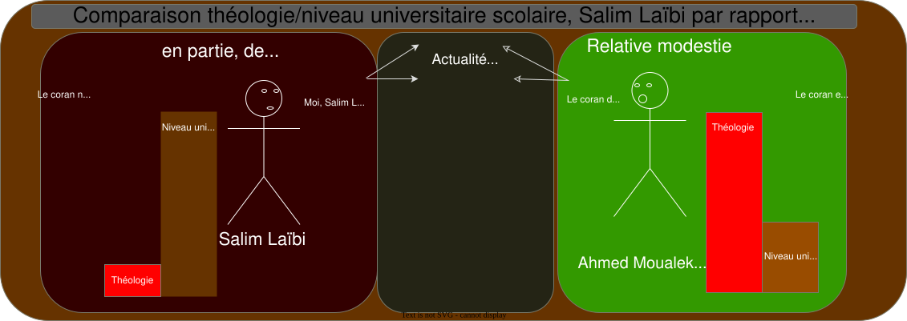
Ce n'est pas que j'estime que Salim Laïbi aurait dit "Adorez-moi à l’exclusion de Dieu !", activement. Mais en ne citant quasiment jamais le coran, en ne parlant quasiment jamais de théologie, aurait-ce été, passivement, pour Salim Laïbi, une manière de dire "Adorez-moi".
Salim Laïbi, quel espoir donna-t-il, quel espoir international, par rapport à l'état du monde🆕
À passer une partie considérable de son temps à se plaindre (peut-être à juste titre), mais, en ne parlant quasiment jamais de théologie (du coran, entre autres), en ne parlant jamais du Mahdi, quel espoir Salim Laïbi donna-t-il? Quelle perspective, à l'internationnal, pour avancer?
Salim Laïbi, l'islam et les livres
Depuis quelques années, j'ai suivi les vidéos de Salim Laïbi. 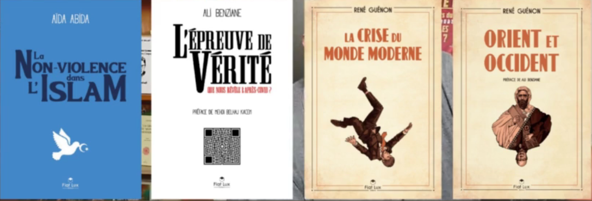
Un de ses Auteurs fétiches serait René Guenon.
Un des prochains livres à paraître de Salim Laïbi en septembre 2024 (je rédige ceci en août 2024), serait "climate terror". Encore une fois, il n'est pas question de théologie directement, du coran, de l'islam. Encore une fois, Salim Laïbi tourne autour de l'occident.
J'imagine que sur ces 67k posts (soit 67000 posts, ou environ), pas plus de 10% de ces post parlent directement du coran.
Concernant le "règne de la quantité", cette expression qui est aussi partiellement le titre d'un livre de René Guénon, Salim Laïbi, à poster autant de tweets depuis des années, et en ne parlant quasiment jamais du coran/du prophète de l'islam, Salim Laïbi ne fut-il pas, en tant que prétendu Musulman, dans un règne de la quantité?
Salim Laïbi - Un islamiste? Quelle importance accorda-t-il à la théologie musulmane?

Ce que Salim Laïbi me sembla surtout avoir fait, depuis plusieurs années, c'est du commentaire d'actualités, plutôt que de la théologie.
Comment se fit-il que Salim Laïbi parla si rarement du coran, de l'islam, du sunnisme, du chiisme, des hadiths?...
Tout ceci ne me sembla pas normal. De plus, de mémoire, je crois que Salim Laïbi n'a, sinon jamais, quasiment jamais parlé du Mahdi. Comment ceci se fait-il aussi?
De plus, comment Quelqu'un porté sur la religion pourrait dépenser autant de temps qu'il sembla en dépenser, depuis des années, pour les affaires politiques/l'actualité (française en particulier) quand :
- On considère le temps que peut prendre l'étude du coran et des textes annexes (hadiths, sunna, etc.)
- On considère qu'il mit plutôt assez rarement en lien les affaires politiques actuelles avec le coran ou d'autres textes religieux (comme le font en général par exemple Maamar Metmati ou Imram Hosein). Quand est-ce qu'il prit tel ou tel verset du coran pour le mettre en relation avec telle ou telle affaire politique : quasiment jamais.
À considérer le nombre d'ambiguïtés chez les Maghrébins actuellement, les "problèmes"/incohérences chez Salim Laïbi, j'en arriverais même à me demander s'il serait en partie Chrétien. À se demander aussi si dans les années à venir, si divers événements eschatologiques se produisent, la plupart des Musulmans iront vers la Trinité.
La ''respiration'' de Salim Laïbi🆕
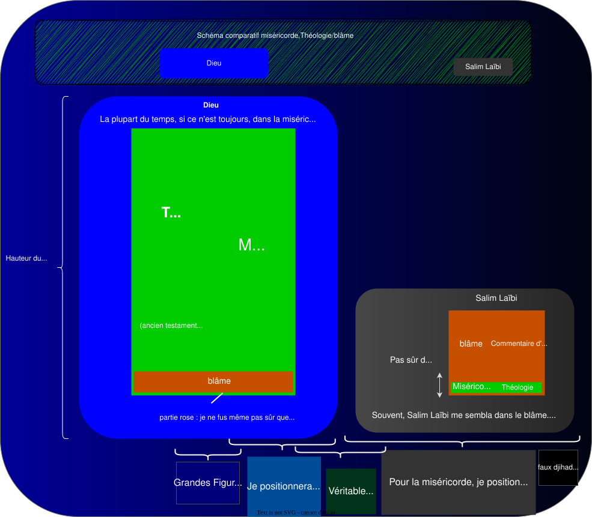
Depuis plusieurs années, Salim Laïbi dut m'apparaître comme Quelqu'un d'assez contradictoire.
Passa une partie considérable de son temps à se plaindre d'un manque d'esprit, d'intellectualité, chez ses contemporains, tout en ne m'ayant pas semblé lui-même aller vers cette spiritualité, tout en continuant à passer son temps à faire du commentaire d'actualité plutôt que de parler de théologie, et de sa religion : l'islam, le coran.
J'en suis arrivé, entre autres, à suspecter qu'il soit d'origine Ismaélienne. (Avec atavisme d'un abandon du père proche de Dieu : Abraham et ainsi relative mise de côté de la religion.
Comme la plupart des Musulmanisans, tant que ne seront pas arrivés divers événements eschatologiques, un cas particulièrement pas stabilisé.
Salim Laïbi, quelques extraits d'auteurs catholiques, concernant le fait de juger autrui
Je ne dirais pas que c'est tout le temps négatif, de juger, voire ce peut être positif, mais ceci dépend, du jugement..
Pour avoir écouté le livre les dialogues, attribué à Catherine de sienne, ce livre me fit songer à Salim Laïbi, car il me sembla parfois être fait référence au fait qu'il ne faut pas juger.
Catherine de sienne - quelques extraits du livre des dialogues, concernant juger autrui - Salim Laïbi
Chapitre 100 de la partie 2 des dialogues de Catherine de sienne
C.- De la troisième et parfaite lumière- Des œuvres de l'âme parvenue à cette lumière.
7.- En effet, tous vos efforts doivent tendre à tuer votre volonté, et ne vouloir autre chose que suivre ma douce Vérité, le Christ crucifié, en cherchant l'honneur et la gloire de mon nom et le salut des âmes ceux qui sont dans (173) cette glorieuse lumière le font, et c'est pour cela qu'ils sont toujours dans la paix et le repos. Rien ne les scandalise, parce qu'ils ont éloigné ce qui cause le scandale, c'est-à-dire la volonté propre. Les persécutions que le monde et le démon peuvent soulever passent à leurs pieds ; ils traversent les grandes eaux de la tribulation et de la tentation sans qu'elles puissent leur nuire, parce qu'ils sont revêtus et fortifiés par l'ardeur de leur désir. Ils se réjouissent de tout, et ne jugent pas mes serviteurs ni aucune Créature raisonnable.
8.- Ils sont heureux de tout ce qu'ils voient, de tout ce qu'ils rencontrent, et ils disent : Grâces vous soient rendues, ô Père éternel ! de ce qu'il y a en votre maison plusieurs demeures ( S. Jean, XIV,2 ). Ils se réjouissent plus de voir mes amis suivre des routes différentes que de les voir suivre tous le même chemin, parce qu'ils admirent plus la grandeur de ma bonté ; tout leur est agréable, et leur semble des roses. Non seulement ils sont édifiés du bien, mais ils ne veulent pas juger ce qui est évidemment mal ; ils éprouvent seulement alors une sainte et vraie compassion, me priant pour ceux qui m'offensent et disant avec une humilité parfaite : Aujourd'hui c'est toi, demain ce sera moi, si la grâce divine ne me conserve.
9.- O ma Fille bien-aimée ! passionne-toi pour ce doux, cet excellent état. Contemple ceux qui courent à cette glorieuse lumière ; vois comme leurs âmes sont saintes et se nourrissent pour mon honneur de la nourriture des âmes à la table du saint désir. Ils sont revêtus du beau vêtement de l'Agneau, mon Fils unique, c'est-à-dire de sa doctrine, par l'ardeur de sa charité. Ils ne perdent pas le temps à faire de faux jugements sur mes serviteurs et sur les serviteurs du monde ; ils ne sont jamais scandalisés d'aucun murmure contre eux ou contre le prochain. Ils sont contents de souffrir pour mon nom, et quand une injure est faite aux autres, ils la supportent en compatissant au prochain, ne murmurant pas contre celui qui la fait ou contre celui qui la reçoit.
10.- Leur amour est réglé en moi, le Père céleste. Ils ne s'égarent jamais, et parce qu'il est réglé, ma chère Fille, ils ne se scandalisent pas de ceux qu'ils aiment ni (174) d'aucune Créature raisonnable. Leur opinion est morte et non vivante. Ils ne s'arrêtent pas à juger la volonté des autres, mais ils ne voient partout que l'expression de ma miséricordieuse bonté. Ils observent la doctrine qui, tu le sais, te fut donnée au commencement de ta vie par ma Vérité, quand tu lui demandais avec un grand désir comment tu pourrais parvenir à une pureté parfaite. Lorsque tu en cherchais les moyens, tu sais ce qui te fut répondu. Tu t'étais endormie dans ce désir, et la parole retentit non seulement à ton esprit, mais à ton oreille, de telle sorte, s'il t'en souvient, que tu fus rappelée à toi-même.
11.- Ma Vérité te disait clairement : si tu veux arriver à la pureté parfaite ; et que ton esprit ne soit troublé par aucun scandale, il faut toujours m'être unie par l'amour, car je suis la souveraine, l'éternelle Pureté. Je suis le feu qui purifie l'âme véritablement. Plus tu t'approcheras de moi, plus tu deviendras pure ; et plus tu t'en éloigneras, plus tu seras souillée. Les hommes du monde ne tombent dans de si grandes souillures que parce qu'ils sont séparés de moi ; car l'âme qui s'unit à moi participe nécessairement à ma pureté.
12.- Il faut faire une autre chose pour arriver à cette union, à cette pureté : il faut t'abstenir de tout jugement sur ce que tu vois faire ou dire par quelque Créature que ce soit, contre toi ou contre les autres ; il ne faut jamais considérer la volonté de l'homme, mais voir ma volonté en toute chose. Si tu vois un péché ou un défaut évident, il faut tirer de l'épine la rose, en m'offrant les coupables par une sainte et fraternelle compassion. Au milieu des injures que tu reçois, juge que ma volonté les permet pour éprouver la vertu en toi et en mes serviteurs, pensant que celui qui les dit est un instrument choisi par moi, et que souvent ses intentions sont bonnes ; car personne ne peut juger les secrets du coeur de l'homme.
13.- Ce que tu ne vois pas être évidemment un péché mortel, tu dois ne pas le juger dans ton esprit et ne voir que ma volonté. Lorsque tu vois un péché évident, tu ne dois pas le condamner, mais en avoir compassion ; de cette manière tu arriveras à la pureté parfaite, parce (175) qu'en faisant ainsi, ton esprit ne sera scandalisé ni en moi, ni dans le prochain. Vous tombez dans le mépris du prochain lorsque vous ne voyez que sa mauvaise volonté envers vous, et non pas ma volonté dans ses actes. Ce mépris et ce scandale séparent l'âme de moi, et empêchent sa perfection. Dans quelques-uns même la grâce est détruite plus ou moins, selon la gravité du mépris et de la haine qu'ils ont contre le prochain en le jugeant.
14.- Le contraire arrive à l'âme qui en tout, comme je te l'ai dit, voit ma volonté toujours attentive à votre bien. Tout ce que je donne et permets est pour que vous parveniez à la fin pour laquelle je vous ai créés. Le moyen de rester toujours dans l'amour du prochain est de rester toujours dans le mien, et l'âme en m'aimant m'est toujours unie.
15.- Si tu veux absolument parvenir à cette pureté que tu me demandes, il faut faire surtout trois choses : T'unir à moi par l'amour, en conservant dans ta mémoire le souvenir des bienfaits que tu as reçus de moi ; voir avec l'oeil de ton intelligence l'ardeur ineffable de ma charité envers vous ; voir enfin ma volonté dans la volonté de l'homme, et non pas sa méchanceté, parce que c'est moi qui suis juge, ce n'est pas vous. Tu arriveras ainsi à la perfection. Telle est la doctrine que t'enseigna ma Vérité, s'il t'en souvient bien.
16.- Maintenant, ma très chère Fille, je dis que ceux qui suivent cette doctrine ont, dès cette vie, un avant-goût de la vie éternelle. Si tu la conserves dans ton âme, tu ne tomberas jamais dans les pièges du démon ; car tu les reconnaîtras aux signes que tu m'as demandés. Mais pour satisfaire plus complètement tes saints désirs, je te montrerai que votre jugement ne doit jamais condamner, mais seulement compatir.
Pape Pie X - quelques extraits concernant juger autrui - Salim Laïbi
Mais pour que ce zèle à enseigner produise les fruits qu'on en espère et serve à former en tous le Christ, rien n'est plus efficace que la charité; gravons cela fortement dans notre mémoire, ô Vénérables Frères, "car le Seigneur n'est pas dans la commotion" (36). En vain espérerait-on attirer les âmes à Dieu par un zèle empreint d'amertume; reprocher durement les erreurs et reprendre les vices avec âpreté cause très souvent plus de dommage que de profit. Il est vrai que l'Apôtre, exhortant Timothée, lui disait : "Accuse, supplie, reprends, mais il ajoutait : en toute patience" (37).
extrait de la lettre encyclique de sa sainteté le pape Pie x sur la charge de souverain pontife. Supremi (4 octobre 1903) | PIE X https://www.vatican.va/content/pius-x/fr/encyclicals/documents/hf_p-x_enc_04101903_e-supremi.html
Quelques citations du coran concernant juger d'autrui - railler autrui - Salim Laïbi
|
"Au nom de Dieu, Le Clément, Le miséricordieux."
bismillāhi r-Raḥmāni r-Raḥīmi (بِسْمِ ٱللَّٰهِ ٱلرَّحْمَٰنِ ٱلرَّحِيمِ) |
||
| Bismillah en forme de poire |
|
|
|||||||||
|
|||||||||
|
|||||||||
|
|
Salim Laïbi soi-disant Musulman, mais ayant eu souvent aussi un comportement... de droite? Voire "d'extrême droite"?
Salim Laïbi - De gauche et de droite..
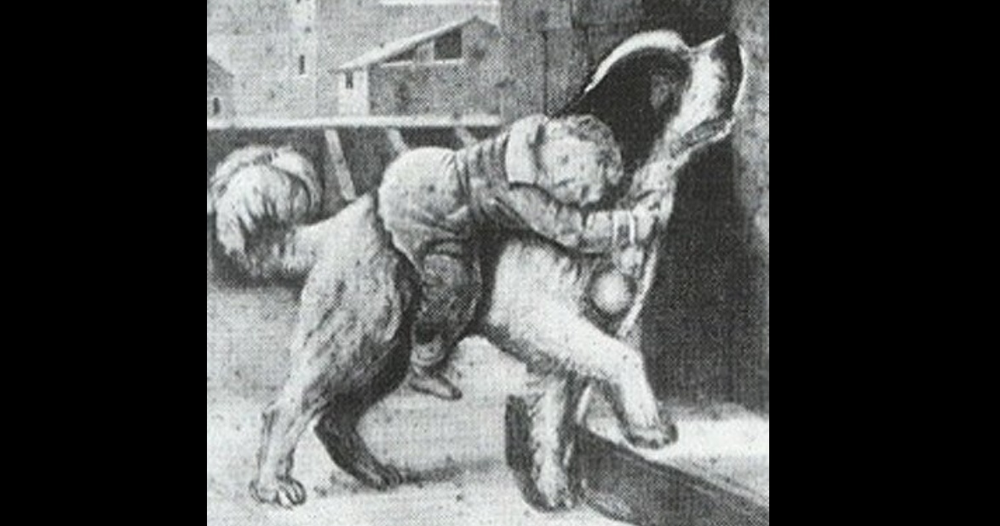 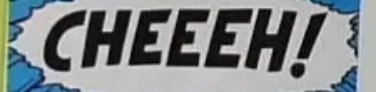
Méthodologiquement, je dirais, un problème avec ce genre de comportement qu'eut Salim Laïbi, un comportement ayant pu, pour certains du moins, sembler railleur et ayant pu être ressenti comme cassant/blessant, c'est que ce comportement risquerait de ralentir un rétablissement de celui/celle qui a chuté. Ce comportement serait risquer de ne pas donner à l'autre l'impression que malgré qu'il(elle) ait "chuté", qu'il soit tout de même soutenu et qu'il puisse être pardonné, non moqué pour sa chute.
Un comportement de Salim Laïbi, entre autres comportements, qui me donna une sensation mitigée pour Salim Laïbi.
| Salim Laïbi, un comportement paradoxal quant à divers comportements d'autrui | ||
| En partie, un comportement plutôt Humain | C o m p o r t e m e n t m i t i g é |
En partie, un comportement plutôt inHumain, voire méchant?, "maléfique?" |
| Me sembla s'être intéressé à divers problèmes du monde. Me sembla s'être intéressé à la souffrance d'autrui. Vigilant à essayer de prévenir les uns et les autres. |
Mentalité assez comparable parfois à certains articles du site "democratieparticipative". Comportement plutôt semblable à certains Intervenants dits "d'extrême droite". |
|
| |
||
| Comportement plutôt comparable à la gauche, dans le sens positif de la gauche : la gauche sociale, Humaine | Comportement plutôt comparable à la droite dans le sens négatif de la droite : la droite inHumaine, cassante | |
| Se moquer, railler, être cassant, à l'occasion de tel ou tel comportement des uns ou des autres | ||
| Quelques exemples : répéter plusieurs fois tel ou tel sobriquet pour l'un ou l'autre: - Alain Soral (appelé "le j**kie"), ou Gérald Darmanin, répétitivement appelé "Gégé la t**l*t*". Employer tel ou tel qualificatif pour désigner les uns ou les autres. - Répéter une association entre le nom de famille d'Olivier Véran (ancien ministre) et le chien de la bande dessinée lucky luke. (Alors que bien probablement, d'autres Créatures portèrent et portent encore, ce nom de famille). - Jouer sur une sorte de manière de prononcer d'Olivier Véran (avec cheveux sur la langue) Des jugements plutôt de la hauteur d'un collégien dissipé (avec attaques répétées, attaques sur le physique). |
||
Comportement de Salim Laïbi par rapport à une chute en vélo
En 2022, il relaya une vidéo sur une chute en vélo de Joe Biden. Mentalité assez négative, j'ai trouvé, de faire de l'ironie sur ceci (fut-ce même de la moquerie?). (Même si je conçois que l'on puisse reprocher ceci ou cela à J. Biden, qu'est-ce que ceci ferait avancer à la situation de faire de l'ironie de lui ainsi.) D'ailleurs, le site democratieparticipative relaya aussi cette information.
Serait-ce digne d'un Musulman de faire de l'ironie sur la chute en vélo d'une personne âgée?
Au moins, comparé à D. Trump, J. Biden est en couple avec une Fille de son âge. De plus, il a été présenté comme n'ayant pas été pas adultérin. (À comparer, par exemple, à François Mitterrand.)
| Salim Laïbi, par moments un comportement railleur, comparable au comportement de certains Auteurs de certains sites internet | ||
| Capture écran telegram Salim Laïbi | Capture écran site démocratieparticipative | |
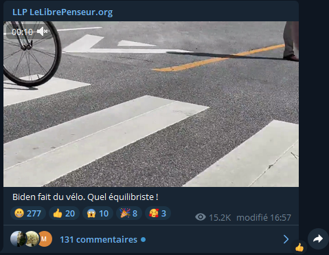 |
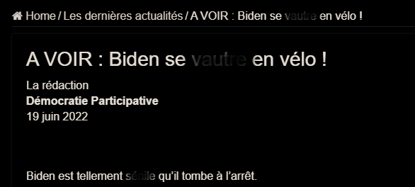 |
|
Salim Laïbi entre deux eaux - Une part d'Occidental / une part d'Oriental
Comme certains Maghrébins ayant émigré en europe, je dirais que Salim Laïbi eut en lui une part de lumière orientale, mais aussi une part d'immaturité occidentale. Quelqu'un de systématiquement entre deux (en bien ou en mal d'ailleurs):
| Entre deux eaux à n'en plus finir | ||
| prétendument Musulman | 15 ans au moins qu'il ne parla quasiment jamais directement du coran, des ses sourates/versets, des hadiths, du Mahdi | |
| prétendument Musulman | passa une partie considérable de son temps à faire des conférences dans des villes françaises, à ne pas parler du coran et de théologie, mais plutôt de science et de politique (lui manquerait la baguette sous le coude? et le béret?) |
|
| prétendument Musulman | sembla excité par une manière d'être Marseillaise | |
| un pied en afrique | un pied en europe | |
| un pied en algérie | un pied en france | |
| une part d'islamisme | une part de Christianisme? | |
| une part d'oriental, en lui | une part d'occidental | |
| Tantôt de gauche | Tantôt de droite | |
Avant d'être un croyant, Salim Laïbi ne fut-il pas, surtout, comportementalement, un Scientifique, un Occidental, un Marseillais?
Salim Laïbi, du moins en partie, un Occidental
Salim Laïbi - un Occidental? Signification du mot maghreb, wikipedia
Un rejet du mode de vie à l'occidentale et, en partie du moins, un mode de vie à l'occidentale...
Étymologiquement, les Maghrébins seraient des Occidentaux. De mémoire, au moins une fois, Salim Laïbi critiqua divers Maghrébins de copier le mode de vie américain (et il y aurait de quoi les critiquer, je trouve aussi), mais, en partie, depuis des années, Salim Laïbi ne le "copia"-t-il pas lui-même, ce mode de vie occidental/américain...
Quelqu'un dont je me demande, en ce dimanche 1er septembre 2024, si je vais le déplacer 🚂 plutôt dans la
, dans la catégorie Occidentaux.
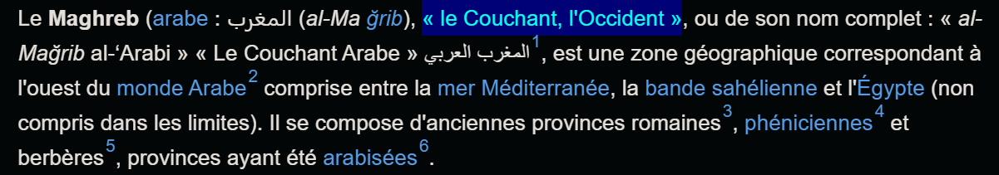
Salim Laïbi - un Occidental? Vidéo d'introduction à certains lives
|
|
Dernièrement, dans certaines vidéos, il mettait en tant que vidéo d'introduction (ou avant que le live commence)
. Mais que fit-il? Pourquoi pas de la musique arabe ou maghrébine, plutôt?) Aurait-il une âme plutôt algérienne/maghrébine, ou plutôt française?
Enfin il fit tout de même dernièrement une interview à propos d'Abdel Kader.
De plus, je considérerais que beaucoup de Créatures musulmanisanes se ficheraient pour la plupart d'aller étudier la politique française. Mais plutôt, instinctivement, directement, ils auraient un mépris pour elle.
Salim Laïbi - Quelqu'un d'occidentalisé? Un Auteur fétiche de Salim Laïbi - René Guénon
Il me sembla qu'un de ses Auteurs "fétiche", à plusieurs reprises, depuis plusieurs années, de Salim Laïbi, que c'était René Guenon.
Pourquoi son Auteur fétiche ne serait pas un autre Auteur de base musulman? Enfin quoique je ne sois plus tout à fait sûr, mais je ne serais pas étonné que dans une vidéo, Salim Laïbi déclara qu'au-dessus de tout, il y avait le coran. (Je ne m'en souviens plus tellement s'il le dit et dans quelle vidéo.)
Salim Laïbi me sembla accorder une importance toute particulière à la franc-maçonnerie et à l'occulte depuis des années. Il en serait même à se demander s'il accorda plus de temps à lire des textes sur l'occulte que sur le sacré.
| Une citation de René Guénon | Comportement de Salim Laïbi | |
« Il est nécessaire aujourd’hui plus que jamais de rappeler aux hommes l’existence des principes supérieurs, sans lesquels aucune civilisation véritable ne saurait subsister. » |
Ces principes supérieurs, pour Salim Laïbi, qui se déclara Musulman, ces principes ne seraient-ils ceux du coran? Les répéta-t-il souvent? |
Salim Laïbi - Quelqu'un d'occidentalisé? Parcours universitaire
Comment Salim Laïbi put-il aussi faire un parcours universitaire aussi long, au milieu de gens, j'imagine, pour la plupart qui n'étaient pas Musulmans (les étudiants qui étaient avec lui à la faculté)? À moins, entre autres, d'être soi-même, pour partie du moins, occidental...
| Un(e) Occidental(e) | Un(e) Maghrebin(e) Mi Oriental mi Occidental (voire + Occidental qu'un Occidental?) |
Arabe d'arabie saoudite, Oriental(e) | ||
| Peut faire un parcours de plusieurs années à la faculté occidentale (en france ou en europe) | Peut faire plusieurs années à la faculté occidentale | Inconcevable de faire plusieurs années en présence de "koufars" Occidentaux | ||
| Peut habiter dans un pays où dans les rues il y a des Filles non voilées et/ou avec des décolletés | Peut quitter le maghreb pour aller dans un pays où dans les rues il y a des Filles non voilées et/ou avec des décolletés | Inconcevable de marcher dans la rue au milieu de Filles non voilées et/ou avec des décolletés | ||
Salim Laïbi - Les extraterrestres, l'énergie libre etc. - Un comportement d'Occidental?
Par ailleurs, ce dut me sembler pour le moins assez étonnant comment depuis de nombreuses années, Salim Laïbi me sembla rejeter à ce point les théories, les hypothèses, sur les Extra-terrestres/ l'ufologie. Voire parfois, de mémoire, je crois, il se moqua de théories sur les reptiliens ou les petits gris. (Quel intérêt de se "moquer" de ceci?) À la limite que Quelqu'un ait du scepticisme, je peux comprendre, et même ce serait préférable, mais pourquoi se moquer/tourner ceci en dérision?
D'autant plus étrange que depuis des années, il me sembla s'intéresser au nouvel ordre mondial, et beaucoup de théories.
Même Quelqu'un comme Gérard Fauré (auteur de "Le prince de la coke" et qui fut un invité de Salim Laïbi) semblait accorder une certaine importance aux Extra-terrestres. (Dans une conférence à marseille avec Salim Laïbi, il évoqua à un moment Mitterrand et les Extra-terrestres.)
Moi-même, je n'ai pas de certitude quant à l'existence ou non d'Extra-terrestres, mais à considérer le niveau de pénibilité et de "bizarrerie" de ce monde, je ne me permettrais pas de rejeter aussi rapidement que Salim Laïbi, l'hypothèse des extraterrestres/énergie libre et autres phénomènes paranormaux, ou même de m'en moquer. Ce serait vraiment écarter lamentablement une piste éventuellement importante, pour mieux comprendre ce qu'il se passe sur terre.
(En 2022, il relaya une vidéo sur les Extra-terrestres, mais plutôt pour rejeter cette hypothèse extra-terrestre: Le mensonge vu du ciel # Intégral – Le Libre Penseur
)
Salim Laïbi, Oriental
Salim Laïbi et la peine de m*rt - Salim Laïbi et sa relation à la violence
J'ai cru comprendre qu'il s'était exprimé en faveur de la peine de mort (de mémoire, il y a moins de 5 ans, dans au moins une vidéo, il se prononça pour) mais que fit-il de Moïse et d'un des dix commandements: tu ne tueras point. Moïse me sembla présent dans le coran (enfin dans la traduction que j'en eut).
2. Sourate de la Vache (Al-Baqara)
[51] Souvenez-vous également du jour où Nous avons donné rendez-vous à Moïse pendant quarante nuits et que vous avez profité de son absence pour adopter le Veau d’or comme idole, faisant ainsi preuve de votre iniquité. [52] Mais, malgré cela, Nous vous avons accordé Notre pardon, dans le but de vous voir manifester votre reconnaissance ! [53] Après quoi, Nous donnâmes à Moïse le Livre et le Critérium du Bien et du Mal, afin que vous soyez bien guidés.
Que ferait Salim Laïbi du verset 84 de la sourate 3 :
3. Sourate de la Famille d’Imran (Âl-‘Imrân)
[84] Dis : « Nous croyons en Dieu, à ce qu’Il nous a révélé, à ce qu’Il a révélé à Abraham, à Ismaël, à Isaac, à Jacob et aux Tribus ; à ce qu’ont reçu de leur Seigneur Moïse, Jésus et les prophètes. Nous ne faisons aucune distinction entre eux, et c’est à Dieu que nous nous soumettons. »
()
Dans la version du coran que j'avais (Chiadmi), j'eus 209 résultats pour le "mot-clef" "Moïse", voici à travers un extrait de sourate 2 résultats parmi ces 209:
6. Sourate des bestiaux
[91] Les négateurs n’estiment pas Dieu à Sa juste valeur quand ils disent :
« Dieu n’a jamais rien révélé à un mortel. » Demande-leur : « Qui donc a révélé l’Écriture que Moïse a apportée comme lumière et direction pour les hommes ? – Ce Livre que vous écrivez sur des feuillets, pour n’en montrer qu’une partie, tout en cachant tout le reste, et dans lequel vous avez appris ce que vous ne saviez ni vous ni vos ancêtres ? » Réponds-leur : « N’est-ce pas que c’est Dieu ! » Puis laisse-les divaguer dans leurs vaines disp*t*s.
[154] Puis Nous avons donné à Moïse, en insigne récompense pour sa conduite exemplaire, l’Écriture qui constitue à la fois une explication détaillée de toute chose, une bonne direction et une miséricorde divine, afin que les juifs puissent croire à leur comparution devant leur Seigneur.
Donc comment Salim Laïbi expliquerait-il cette équation : "je suis Musulman" + "je suis pour la peine de mort" + "Moïse est cité dans le coran comme Quelqu'un en qui nous croyons" + un des dix commandements est : tu ne tueras point.
"Qui donc a révélé l’Écriture que Moïse a apportée comme lumière et direction pour les hommes ?" (verset 31 sourate 6)
Ne fut-ce pas Dieu?
Bilan et perspectives : Salim Laïbi, un Musulman? un véritable chercheur de vérité?
Salim Laïbi, peut-être bien davantage un Musulman que d'autres, si l'on voit l'islam d'une certaine manière, ou bien moins Musulman que d'autres, si' l'on voit l'islam d'une autre manière
| Si le vrai Dieu est le Fils Et que l'objectif du véritable islam serait la remise en place du Fils |
Si le vrai Dieu est Allah | ||
| Si je considère que l'islam comme une religion de transition et que l'islam doit conduire vers la Trinité, alors Salim Laïbi, dans ce sens, serait peut-être davantage musulman que des Musulmans rigoristes. Je me demande si quand même les Gens qui ont une certaine intelligence se rendraient compte que l'islam, en dehors du coran, fut aussi une sorte de fatras (c'est-à-dire pour les hadiths), et qu'ainsi, ils ne pourraient pas être tout à fait Musulmans. J'ai même l'impression que pour beaucoup de "Musulmans", en france en tout cas, ils furent tellement dans l'ambiguïté que j'en arrive à me demander si la religion musulmane serait une finalité en soi (certains ont prétendu qu'elle avait divers liens avec le judaïsme), ou plutôt un tremplin vers la Trinité. Et c'est ce qui expliquerait peut-être pourquoi certains semblent avoir un pied dans l'islam et un pied qui va vers le Christianisme, ou du moins une maison, un travail en pays (plus ou moins) Chrétien... |
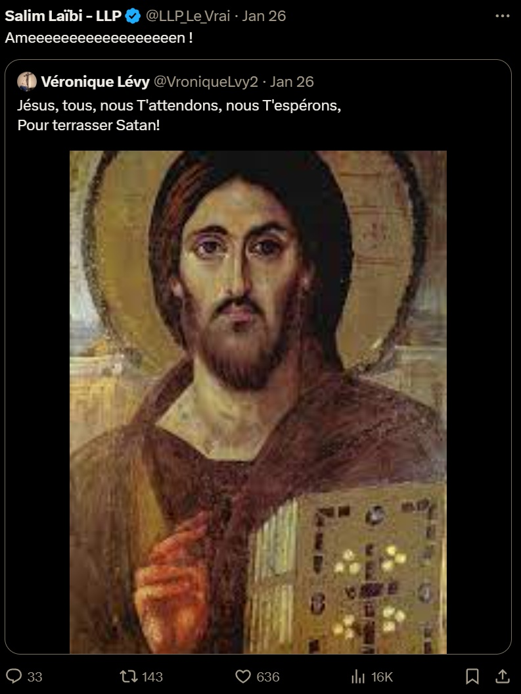 |
D'un certaine manière, Salim Laïbi pourrait sembler bien moins Musulman que d'autres et même assez insupportable à ne quasiment jamais parler du prophète ou du coran | |
Mon bilan concernant Salim Laïbi: il ne me sembla pas tout à fait un vrai Musulman, et depuis qu'il a commencé des vidéos sur internet, (il y a une quinzaine d'années, je dirais), je doute qu'il fut essentiellement un véritable chercheur de vérité. Sensation très mitigée sur Salim Laïbi. Je trouve, il y a en partie quelque chose de positif en lui, mais en partie quelque chose de négatif, aussi. Même si Salim Laïbi s'est parfois déclaré Musulman, ce ne fut pas tout de le dire. Si ce n'est pour quasiment jamais parler du coran ou faire de lien entre l'actualité et le coran, qu'est-ce que j'ai bien pu y comprendre, que c'était un Musulman. 🤔🫤Incompréhensible. Voire assez pénible, à la longue.
Dans divers domaines, malheureusement, Salim Laïbi me sembla assez immature, assez mentalement occidental
Malgré je trouve son apparence extérieure plutôt sympathique et des capacités d'orateur, je suspecte quand même qu'il ait depuis des années beaucoup de contradictions internes et que ceci lui donne/donna de la haine, un aspect assez négatif. Et même si je n'apprécie pas trop l'étiquette d'"extrême droite", j'imagine aussi ce ne fut peut-être pas pour rien, qu'il fut parfois "répertorié" dans cette catégorie. Et en partie, il me sembla avoir quelque chose d'assez dépressif dans son comportement. Comme si c'était Quelqu'un qui se plaignait depuis des années d'être dans la gadoue, mais qui refuserait aussi d'en sortir de cette gadoue.
Est-ce que Salim Laïbi serait tout à fait un vrai chercheur de vérité / un vrai plaignant, ou ne serait-il pas, ne serait-ce qu'en partie, dans un style (se plaindre pour se plaindre)? Il me sembla tellement entre deux eaux, tellement dans l'ambiguïté sur certains points, que même, ne serait-ce qu'histoire de ne pas être pris pour un imbécile, je n'écarterais pas pour le moment l'hypothèse que depuis des années, il fut dans la franc-maçonnerie (en bien ou en mal, je ne juge pas ici la franc-maçonnerie), qu'il soit dans un double jeu, ou même qu'il ait des connaissances sur l'énergie libre et/ou peut-être même en alchimie et qu'il fasse exprès de les cacher. Comment se ferait-il que Quelqu'un qui chercherait la vérité, puisse à ce point mettre de côté les extraterrestres et les considérations sur l'énergie libre (voir page extraterrestres) ou, comme il le fit, depuis des années, à considérer l'importance des conséquences que ceci pourrait avoir, sur une compréhension du monde? Alors même qu'il montra toute une attirance pour l'occulte. Ceci cloche.
Quelqu'un à qui j'aimerais bien faire confiance, Quelqu'un qui d'apparence eut l'air plutôt sympathique et très fort pour relever beaucoup de contradictions logiques de la société (et en plus aussi un des seuls, à l'avoir fait publiquement, en france). Mais malheureusement, Quelqu'un qui me semble aussi pétri de tellement de contradictions, d'ambiguïtés (listées plus haut dans ce même article) que ce me semblerait impossible que je sois tout à fait à l'aise avec lui, pour le moment.
Perspective / danger / inquiétude, par rapport à Salim Laïbi
Un des dangers, pour Salim Laïbi : que de lui-même, il s'autodétruise.
L'inquiétude serait que Salim Laïbi soit en train, de couver un mauvais coton, et même déjà depuis des années. Parce qu'il a beau dire beaucoup de vérités, il n'empêche qu'à être là à passer une grande partie de son temps à juger et même à assez souvent donner des sobriquets aux uns et aux autres, l'hypothèse, c'est qu'il va vraiment se constituer une noirceur de l'âme, c'est qu'il va se détruire à petit-feu. Qu'il fasse des analyses politiques, c'est une chose, et j'estime, pour les vidéastes publiquement connus, ce fut un des meilleurs, un des plus réactifs de france, à ce niveau, par contre, ne faire quasiment que ceci, depuis des années, ne quasiment jamais parler de théologie, là, je dirais il y a un problème, et ce serait à se demander, si en partie, ce qu'il fait, c'est aussi par plaisir de faire de la "médisance", par plaisir aussi de descendre qui il jugea. À se demander, aussi, si son comportement de critique fréquente des Occidentaux serait une sorte de faux-fuyant dans lequel il serait et qu'au lieu d'intérioriser ses problèmes et d'aller davantage vers la religion, il file en partie un mauvais coton en continuant à dépenser du temps pour les frasques de la politique occidentale. (Par exemple, parler de "GéGé la t*rl*te" (en parlant du ministre de l'intérieur), une fois, peut-être, ceci peut se comprendre (et encore) mais le re-répéter si souvent... Dans quoi on fut, avec ce comportement? De re-répéter ce "sobriquet", est-ce qu'il n'eut pas le risque que ceci enfonce le problème plutôt que ceci le résolve?)
Gilets jaunes
Playlist gilets jaunes :🆕
|
|
Gilets jaunes🆕
Je dirais que le mouvement des Gilets jaunes fut un des mouvements collectif, symboliquement, les plus Humains, les plus rationnels, qu'il y eut, au cours des dernières décennies, en france. (Quoiqu'il y aurait encore des progrès de possible). Voire le plus Humain, au cours des dernières décennies. Et peut-être même internationalement. Comme une sensation d'Humanité qu'il n'y avait pas eu depuis des décennies, en france. (Je ne parle évidemment pas de ceux/celles qui se seraient "infiltrés" dans ce mouvement pour faire de la casse et/ou des vols.) Entre l'ambiance sur les ronds-points, sur les champs-élysées, les voitures avec le gilet..
Comme une ambiance prémisse de ce que pourrait donner un jour un mouvement collectif de délivrance finale.
Je me demande si une délivrance finale arrive un jour, sur terre, alors une ambiance Gilets jaunes, telle que certains purent la ressentir lors de ce mouvement, une ambiance de la sorte sera aussi retrouvée, au début d'un mouvement de délivrance finale (avec apparition du Fils? et avant? d'un Mahdi/Machia'h?/grand Monarque? divers événements eschatologiques?). Et une ambiance même bien plus intense et bien plus durable (à se demander même si cette ambiance ne cessera plus).
(J'ai rédigé plus haut "le mouvement des Gilets jaunes fut un des mouvements collectif", mais divers Gilets jaunes auraient encore manifesté, dernièrement, en 2025 ("Ce samedi les gilets jaunes ont manifesté non loin de Montmartree" 01/02/2024 - YouTube https://www.youtube.com/watch?v=z1B9qOlv8S8)). Enfin le "gros du mouvement" me sembla surtout avoir eu lieu au début.)
La franc-maçonnerie ? 📐
Préambule - la franc-maçonnerie
Je ne suis pas moi-même actuellement membre direct de la franc-maçonnerie et par le passé, je n'en ai jamais été membre direct. Peut-être indirectement, des Gens auraient entendu parler de moi et parlèrent de moi, lors de réunions, dans des loges. Je n'en sais rien.
J'ai vu, depuis quelques années, diverses vidéos concernant la franc-maçonnerie. J'ai écouté divers audios.
De mémoire, dans le livre du Ciel, il est parfois évoqué la franc-maçonnerie. Dans Maria Valtorta, aussi.
Est-ce qu'actuellement, en l'année 2025, il se dirait des choses bien en franc-maçonnerie? Des choses mal? Je ne sais pas.
Par contre, je fais deux considérations sur la franc-maçonnerie.
Franc-maçonnerie : Une ambiance d'intrigue?
 |
Est-ce qu'il se dit des choses en bien ou en mal, dans les loges franc-maçonnes? Je n'en sais rien.
Par contre, est-ce que dire ceci-cela, en secret participe à une certaine ambiance?
Incohérence? république et égalité | franc-maçonnerie et privatisation, secret, grades, hiérarchie
| Différences République / Franc maçonnerie |
|||||
| La république | Franc-maçonnerie | ||||
| public | privé | ||||
| ce qui serait censé être devise dela république ➡️ | liberté, égalité, fraternité | Hiérarchie (grades) | |||
| Quelle cohérence aurait Quelqu'un(e) qui se prétendrait républicain et qui serait simultanément dans la franc-maçonnerie/privée? Que voudrait-il/elle? |
|||||
| Le public pour tout le monde.. | sauf.. pour quelque-un(e)s qui eux auraient aussi certaines infos.. en privé.. | ||||
Franc-maçonneire et république : Le public ou le privé?
Selon certains, nous serions en "république". Et certains (les "républicains") seraient particulièrement attachés à ce que nous soyons dans un système public.
Mais alors comment expliquer que certains qui semblent tenir à cette république, soient simultanément dans un système franc-maçon privé? (privé, ne serait-ce que parce que ces réunions seraient secrètes, autrement rédigé, privées). Que souhaitent-ils? Le public ou le privé? Le public pour tout le monde.. sauf.. pour quelque-un(e)s qui eux auraient aussi certaines infos.. en privé..
Quelle cohérence, dans cette ambiance?
Franc-maçonneire et république : L'égalité ou les grades/la hiérarchie?
Comment expliquer aussi qu'en france, où selon certains l'égalité aurait son importance, puisque ce serait quand même la devise du pays ("égalité, liberté, fraternité"), comment-expliquer la cohérence de ceux qui se prétendirent républicains et qu'ils soient eux-mêmes dans la franc-maçonnerie : un système où il y ait des degrés (la franc-maçonnerie)? et donc plutôt une hiérarchie par degrés, plutôt que l'égalité. Là aussi, pour Ceux/Celles se revendiquant de l'égalité, de la république, que souhaitent-ils : la hiérarchie ou l'égalité? le public ou le privé?